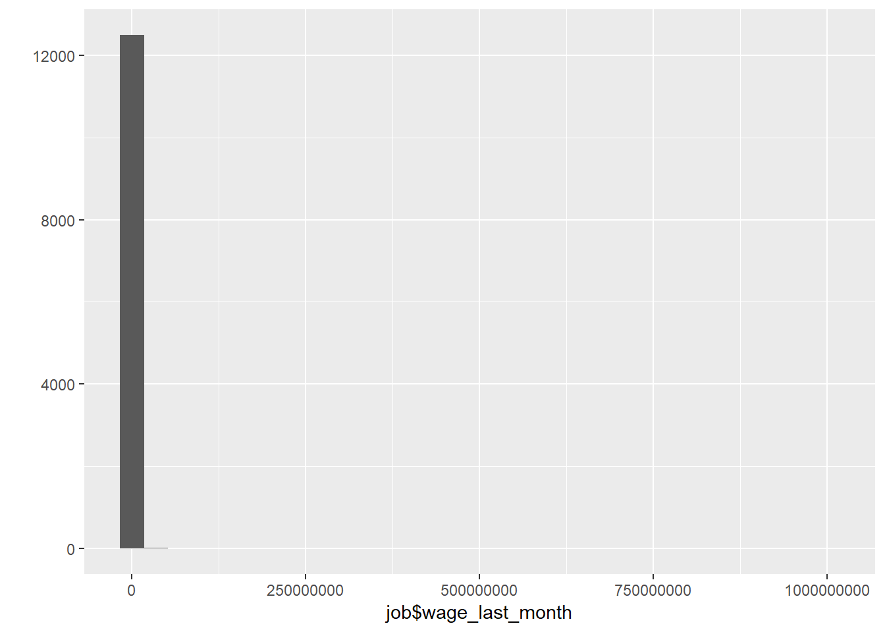

Data Wrangling
Helper
source("0_helpers.R")
## Warning: package 'rmarkdown' was built under R version 3.4.3
## Warning: package 'knitr' was built under R version 3.4.3
##
## Attaching package: 'formr'
## The following object is masked from 'package:rmarkdown':
##
## word_document
##
## Attaching package: 'lubridate'
## The following object is masked from 'package:base':
##
## date
## Warning: package 'stringr' was built under R version 3.4.3
## Loading required package: carData
## lattice theme set by effectsTheme()
## See ?effectsTheme for details.
##
## Attaching package: 'data.table'
## The following objects are masked from 'package:lubridate':
##
## hour, isoweek, mday, minute, month, quarter, second, wday, week, yday, year
## The following objects are masked from 'package:formr':
##
## first, last
## Loading required package: Matrix
##
## Attaching package: 'lmerTest'
## The following object is masked from 'package:lme4':
##
## lmer
## The following object is masked from 'package:stats':
##
## step
##
## Attaching package: 'cowplot'
## The following object is masked from 'package:ggplot2':
##
## ggsave
## Warning: package 'haven' was built under R version 3.4.3
##
## Attaching package: 'psych'
## The following objects are masked from 'package:ggplot2':
##
## %+%, alpha
## This is lavaan 0.5-23.1097
## lavaan is BETA software! Please report any bugs.
##
## Attaching package: 'lavaan'
## The following object is masked from 'package:psych':
##
## cor2cov
## Loading required package: lattice
## Loading required package: survival
## Loading required package: Formula
##
## Attaching package: 'Hmisc'
## The following object is masked from 'package:psych':
##
## describe
## The following objects are masked from 'package:base':
##
## format.pval, round.POSIXt, trunc.POSIXt, units
## Warning: package 'tidyr' was built under R version 3.4.3
##
## Attaching package: 'tidyr'
## The following object is masked from 'package:Matrix':
##
## expand
##
## Attaching package: 'dplyr'
## The following objects are masked from 'package:Hmisc':
##
## combine, src, summarize
## The following objects are masked from 'package:data.table':
##
## between, first, last
## The following objects are masked from 'package:lubridate':
##
## intersect, setdiff, union
## The following objects are masked from 'package:formr':
##
## first, last
## The following objects are masked from 'package:stats':
##
## filter, lag
## The following objects are masked from 'package:base':
##
## intersect, setdiff, setequal, union
Import data
All data is retrieved from the RAND foundation
### Informations about individuals living in the household in 2014/2015
## All Individuals living in the household
bk_ar1 = read_dta("data/hh14_all_dta/bk_ar1.dta") # Book K, Section ar
# compute father pidlink
bk_ar1 = left_join(bk_ar1, bk_ar1 %>% select(hhid14_9, pid14, pidlink) %>% rename(ar10 = pid14, father_pidlink = pidlink), by = c("hhid14_9", "ar10"))
## Warning: Column `ar10` has different attributes on LHS and RHS of join
# compute mother pidlink
bk_ar1 = left_join(bk_ar1, bk_ar1 %>% select(hhid14_9, pid14, pidlink) %>% rename(ar11 = pid14, mother_pidlink = pidlink), by = c("hhid14_9", "ar11"))
## Warning: Column `ar11` has different attributes on LHS and RHS of join
### Informations from IFLS wave 5 to link data to earlier waves:
ptrack = read_dta("data/hh14_all_dta/ptrack.dta") # Tracking informations
### Pregnancy Informations from mother
## Wave 5 - 2014
w5_pregnancy = read_dta("data/hh14_all_dta/b4_ch1.dta") # Book 4, Section ch
## Wave 4 - 2007
w4_pregnancy = read_dta("data/hh07_all_dta/b4_ch1.dta") # Book 4, Section ch
## Wave 3 - 2000
w3_pregnancy = read_dta("data/hh00_all_dta/b4_ch1.dta") # Book 4, Section ch
## Wave 2 - 1997
w2_pregnancy = read_dta("data/hh97dta/b4_ch1.dta") # Book 4, Section ch
## Wave 1 - 1993
w1_pregnancy = read_dta("data/hh93dta/buk4ch1.dta") # Book 4, Section ch
### Marriage information from mother
## Wave 5 - 2014
w5_marriage= read_dta("data/hh14_all_dta/b4_kw3.dta") # Book 4, Section kw3
## Wave 4 - 2007
w4_marriage = read_dta("data/hh07_all_dta/b4_kw2.dta") # Book 4, Section kw2
## Wave 3 - 2000
w3_marriage = read_dta("data/hh00_all_dta/b4_kw3.dta") # Book 4, Section kw3
## Wave 2 - 1997
w2_marriage = read_dta("data/hh97dta/b4_kw2.dta") # Book 4, Section kw2
## Wave 1 - 1993
w1_marriage = read_dta("data/hh93dta/buk4kw2.dta") # Book 4, Section kw2
## Additional marriage information from mother
# Wave 5 - 2014
w5_marriage_additional = read_dta("data/hh14_all_dta/b4_cov.dta") # Book 4, Section cov
# Wave 4 - 2007
w4_marriage_additional = read_dta("data/hh07_all_dta/b4_cov.dta") # Book 4, Section cov
# Wave 3 - 2000
w3_marriage_additional = read_dta("data/hh00_all_dta/b4_cov.dta") # Book 4, Section cov
# Wave 2 - 1997
w2_marriage_additional = read_dta("data/hh97dta/b4_cov.dta") # Book 4, Section cov
# Wave 1 - 1993
w1_marriage_additional = read_dta("data/hh93dta/bukkar2.dta") # Book K, Section ar, household roaster
### IQ Information
ek_ek2 = read_dta("data/hh14_all_dta/ek_ek2.dta") # Book ek2: >15 years
ek_ek1 = read_dta("data/hh14_all_dta/ek_ek1.dta") # Book ek1: <15 years
# additional information (counting backwards, adaptive testing) for adults
b3b_cob = read_dta("data/hh14_all_dta/b3b_cob.dta") # Book 3b, Section cob
b3b_co1 = read_dta("data/hh14_all_dta/b3b_co1.dta") # Book 3b, Section co1
# additional information from earlier waves
bek_ek1 = read_dta("data/hh07_all_dta/bek_ek1.dta") # Intelligence information from wave 4 (2007): 7-14
bek_ek2 = read_dta("data/hh07_all_dta/bek_ek2.dta") # Intelligence info from wave 4 (2007): 15 - 24
bek00 = read_dta("data/hh00_all_dta/bek.dta") # Intelligence information from wave 3 (2000)
bek97 = read_dta("data/hh97dta/bek.dta") #Intelligence information from wave 2 (1997)
### Personality Information (only for adults)
b3b_psn = read_dta("data/hh14_all_dta/b3b_psn.dta") # Book 3b, Section psn
### Risk taking
b3a_si = read_dta("data/hh14_all_dta/b3a_si.dta") # Book 3a, Section si
### Educational Attainment
b3a_dl1 = read_dta("data/hh14_all_dta/b3a_dl1.dta") # Book 3a, Section dl1
### EBTANAS/UAN/UN Score
b3a_dl3 = read_dta("data/hh14_all_dta/b3a_dl3.dta") # Book 3a, Section dl3
b3a_dl4 = read_dta("data/hh14_all_dta/b3a_dl4.dta") # Book 3a, Section dl4
### Job Information
b3a_tk2 = read_dta("data/hh14_all_dta/b3a_tk2.dta") # Book 3a, Section tk2
### Smoking behavior
b3b_km = read_dta("data/hh14_all_dta/b3b_km.dta") # Book 3b, Section km
Birth order information
Information about pregnancy
## Select data
w5_pregnancy = w5_pregnancy %>% select(pidlink, ch05, ch06, ch06a, ch08, ch09day, ch09mth, ch09yr, ch25)
w4_pregnancy = w4_pregnancy %>% select(pidlink, ch05, ch06, ch06a, ch08, ch09day, ch09mth, ch09yr, ch25)
w3_pregnancy = w3_pregnancy %>% select(pidlink, ch05, ch06, ch06a, ch08, ch09day, ch09mth, ch09yr, ch25)
w2_pregnancy = w2_pregnancy %>% select(pidlink, ch05, ch06, ch06a, ch08, ch09day, ch09mth, ch09yr, ch25)
w1_pregnancy = w1_pregnancy %>%
group_by(pidlink, ch04) %>% mutate(ch06a = if_else(!is.na(pidlink) & !is.na(ch04), if_else( n() > 1, 1, 3), 9)) %>%
ungroup() %>%
select(pidlink, ch05, ch06, ch06a, ch08, ch09day, ch09mth, ch09yr, ch25) %>%
# In the first wave the year is named wrong
mutate(ch09yr = ifelse(ch09yr <= 93, ch09yr, NA),
ch09yr = as.numeric(str_c("19", ch09yr)))
## Combine data
pregnancy = bind_rows(w1 = w1_pregnancy, w2 = w2_pregnancy, w3 = w3_pregnancy, w4 = w4_pregnancy, w5 = w5_pregnancy, .id = "wave")
## Warning in bind_rows_(x, .id): Vectorizing 'labelled' elements may not preserve their attributes
## Warning in bind_rows_(x, .id): Vectorizing 'labelled' elements may not preserve their attributes
## Warning in bind_rows_(x, .id): Vectorizing 'labelled' elements may not preserve their attributes
## Warning in bind_rows_(x, .id): Vectorizing 'labelled' elements may not preserve their attributes
## Warning in bind_rows_(x, .id): Vectorizing 'labelled' elements may not preserve their attributes
## Warning in bind_rows_(x, .id): Vectorizing 'labelled' elements may not preserve their attributes
## Rename Variables
pregnancy = pregnancy %>% rename(chron_order_birth = ch05, lifebirths = ch06, multiple_birth = ch06a, gender = ch08,
birth_day = ch09day, birth_month = ch09mth, birth_year = ch09yr,
mother_pidlink = pidlink, alive = ch25) # pregnancy$lifebirths values: 1 = still pregnant, 2 = livebirth, 3 = still birth, 4 = misscarriage
## Set values as NA that are missing
pregnancy = pregnancy %>%
mutate(birth_day = ifelse(birth_day>31, NA, birth_day),
birth_month = ifelse(birth_month>12, NA, birth_month),
birth_year = ifelse(birth_year>2016, NA, birth_year),
birth_day = ifelse(is.nan(birth_day), NA, birth_day),
birth_month = ifelse(is.nan(birth_month), NA, birth_month),
birth_year = ifelse(is.nan(birth_year), NA, birth_year),
multiple_birth = ifelse(multiple_birth == 9, NA, multiple_birth),
multiple_birth = ifelse(is.nan(multiple_birth), NA, multiple_birth))
pregnancy$month = paste0(pregnancy$birth_year,"-", ifelse(is.na(pregnancy$birth_month), "01",
pad_month(pregnancy$birth_month)))
pregnancy = pregnancy %>%
mutate(birthdate = all_available_info_birth_date(birth_year, birth_month, birth_day),
mother_birthdate = str_c(mother_pidlink, "-", birthdate))
pregnancy = pregnancy %>%
mutate(wave_dup = 6 - str_sub(wave, 2, 3) %>% as.numeric()) %>% # from most recent wave to oldest
arrange(wave_dup) %>% # use most recent wave (because these will have pregnancy outcomes)
group_by(mother_birthdate) %>%
mutate(duped_in_earlier_wave = min_rank(wave_dup)) %>%
filter(duped_in_earlier_wave == 1) %>%
ungroup() # eliminate dupes across waves (same mother_birthdate), keep mult births
x = (unique(pregnancy$mother_pidlink))
##remove all with missing birthdate/miscarriage date
table(is.na(pregnancy$birthdate))
pregnancy = pregnancy %>%
filter(!is.na(birthdate))
# for whatever reason there are some multiple births with just one row in the data
pregnancy %>% group_by(mother_birthdate) %>% mutate(mult = n()) %>% crosstabs(~ mult + multiple_birth, data = .)
| 732 |
42657 |
4595 |
| 570 |
141 |
121 |
| 8 |
5 |
20 |
| 4 |
0 |
0 |
## Form variable for any multiple birth in family
pregnancy = pregnancy %>% group_by(mother_pidlink) %>% mutate(any_multiple_birth = if_else(any(multiple_birth == 1), 1, 0))
prop.table(table(pregnancy$multiple_birth))
prop.table(table(pregnancy$any_multiple_birth))
Information about marriage history
## Select marriage data
w5_marriage = w5_marriage %>% select(pidlink, kw10mth, kw10yr, kw18mth, kw18yr, kw11, kw19)
w4_marriage = w4_marriage %>% select(pidlink, kw10mth, kw10yr, kw18mth, kw18yr, kw11, kw19)
w3_marriage = w3_marriage %>% select(pidlink, kw10mth, kw10yr, kw18mth, kw18yr, kw11, kw19)
w2_marriage = w2_marriage %>% select(pidlink, kw10mth, kw10yr, kw18mth, kw18yr, kw11, kw19)
w1_marriage = w1_marriage %>% select(pidlink, kw05a, kw05b, kw13a, kw13b, kw06, kw14age)
# In the first wave the year is named wrong
w1_marriage = w1_marriage %>%
mutate(kw05a = ifelse(kw05a <= 93, as.numeric(str_c("19", w1_marriage$kw05a)), kw05a),
kw13a = ifelse(kw13a <=93 , as.numeric(str_c("19", w1_marriage$kw13a)), kw13a))
# And the column names are wrong...
w1_marriage = w1_marriage %>% rename(kw10mth = kw05b, kw10yr = kw05a, kw18mth = kw13b, kw18yr = kw13a, kw11 = kw06, kw19 = kw14age)
## Select additional marriage information (age of respondent)
w5_marriage_additional = w5_marriage_additional %>% select(pidlink, age, dob_yr)
w4_marriage_additional = w4_marriage_additional %>% select(pidlink, age, dob_yr)
w3_marriage_additional = w3_marriage_additional %>% select(pidlink, age, dob_yr)
w2_marriage_additional = w2_marriage_additional %>% select(pidlink, age, dob_yr)
w1_marriage_additional = w1_marriage_additional %>% select(pidlink, ar09yr, ar08yr)
# In the first wave the year is named wrong
w1_marriage_additional = w1_marriage_additional %>%
mutate(ar08yr = ifelse(ar08yr <= 93,
as.numeric(str_c("19", w1_marriage_additional$ar08yr)),
ar08yr))
# And the column names are wrong...
w1_marriage_additional = w1_marriage_additional %>% rename(age = ar09yr, dob_yr = ar08yr)
## Combine marriage information and additional marriage information:
w1_marriage = left_join(w1_marriage, w1_marriage_additional, by = "pidlink") %>%
mutate(wave = as.numeric("1993"))
w2_marriage = left_join(w2_marriage, w2_marriage_additional, by = "pidlink") %>%
mutate(wave = as.numeric("1997"))
w3_marriage = left_join(w3_marriage, w3_marriage_additional, by = "pidlink") %>%
mutate(wave = as.numeric("2000"))
w4_marriage = left_join(w4_marriage, w4_marriage_additional, by = "pidlink") %>%
mutate(wave = as.numeric("2007"))
w5_marriage = left_join(w5_marriage, w5_marriage_additional, by = "pidlink") %>%
mutate(wave = as.numeric("2014"))
## Combine marriage informations
marriage = bind_rows(w1_marriage, w2_marriage, w3_marriage, w4_marriage, w5_marriage)
## Warning in bind_rows_(x, .id): Vectorizing 'labelled' elements may not preserve their attributes
## Warning in bind_rows_(x, .id): Vectorizing 'labelled' elements may not preserve their attributes
## Warning in bind_rows_(x, .id): Vectorizing 'labelled' elements may not preserve their attributes
## Warning in bind_rows_(x, .id): Vectorizing 'labelled' elements may not preserve their attributes
## Warning in bind_rows_(x, .id): Vectorizing 'labelled' elements may not preserve their attributes
## Warning in bind_rows_(x, .id): Vectorizing 'labelled' elements may not preserve their attributes
# Rename columns
marriage = marriage %>% rename(start_year = kw10yr, start_month = kw10mth, end_year = kw18yr, end_month = kw18mth, start_age = kw11, end_age = kw19, birth_year = dob_yr, birth_age = age)
# Set values as NA that are missing
marriage$start_year[ marriage$start_year<1900] = NA
marriage$start_year[ marriage$start_year>2016] = NA
marriage$start_year[ is.nan(marriage$start_year)] = NA
marriage$end_year[ marriage$end_year<1900] = NA
marriage$end_year[ marriage$end_year>2016] = NA
marriage$end_year[ is.nan(marriage$end_year)] = NA
marriage$start_month [marriage$start_month>12] = NA
marriage$start_month [is.nan(marriage$start_month)] = NA
marriage$end_month [marriage$end_month>12] = NA
marriage$end_month [is.nan(marriage$end_month)] = NA
marriage$start_age [marriage$start_age > 97] = NA
marriage$start_age [is.nan(marriage$start_age)] = NA
marriage$end_age [marriage$end_age > 97] = NA
marriage$end_age [is.nan(marriage$end_age)] = NA
marriage$birth_year[ marriage$birth_year<1900] = NA
marriage$birth_year[ marriage$birth_year>2016] = NA
marriage$birth_year[ is.nan(marriage$birth_year)] = NA
marriage$birth_age [marriage$birth_age > 97] = NA
marriage$birth_age [is.nan(marriage$birth_age)] = NA
## Reconstruct marriage start year and end year for marriages with missing year
marriage = marriage %>%
mutate(birth_year = ifelse(is.na(birth_year), wave - birth_age, birth_year),
start_year = ifelse(is.na(start_year), birth_year + start_age, start_year),
end_year = ifelse(is.na(end_year), birth_year + end_age, end_year))
marriage = marriage %>% arrange(pidlink, start_year, start_month, start_age, end_year, end_month, end_age)
marriage = marriage %>% filter(!duplicated(cbind(pidlink, start_year, start_month)) | is.na(start_year) | is.na(start_month)) # nobody gets married twice on the same day, right? so these are dupes.
## Calculate date for beginning of marriage:
marriage = marriage %>%
ungroup() %>%
mutate(start_string = str_c(start_year, "-", ifelse(is.na(start_month), "01",
pad_month(start_month)), "-01"),
end_string = str_c(end_year, "-", ifelse(is.na(end_month), "12", pad_month(end_month)), "-01"),
start = ymd(start_string),
end = ymd(end_string) + months(1) - days(1))
## Count number of marriages
marriage = marriage %>%
arrange(pidlink, start, end) %>%
group_by(pidlink) %>%
mutate(number_marriages = n(),
order_marriage = row_number(),
marriage_id = paste0(pidlink, "_", as.character(order_marriage), "_",
as.character(start), "/",as.character(end)))
### Marriage Timeline
minimum_start = min(ymd(str_c(pregnancy$month, "-01")), na.rm = T)
maximum_end = max(ymd(str_c(pregnancy$month, "-01")), na.rm = T)
marriage_timeline = marriage %>%
mutate(implied_start = as.Date(ifelse(is.na(start), minimum_start , start),
origin="1970-01-01"),
implied_end = as.Date(ifelse(is.na(end), maximum_end , end),
origin="1970-01-01")) %>%
filter(implied_start < implied_end)
marriage_timeline = marriage_timeline %>%
rowwise() %>%
do(data.frame(
marriage_id=.$marriage_id,
mother_pidlink = .$pidlink,
order_marriage = .$order_marriage,
start = .$start,
end = .$end,
month = seq(.$implied_start,.$implied_end, by="1 month") ))
# no duplicate mother_id - month combinations (no two marriages at the same time)
marriage_timeline = marriage_timeline %>%
arrange(mother_pidlink, start, end) %>%
distinct(mother_pidlink, month, .keep_all = TRUE)
marriage_timeline$month = stringr::str_sub(as.character(marriage_timeline$month),1,7)
pregnancy = pregnancy %>% left_join(marriage_timeline, by = c("mother_pidlink", "month")) %>% ungroup()
Birth order calculations
#### Maternal Pregnancy Order
pregnancy1 = pregnancy %>%
group_by(mother_pidlink) %>%
mutate(birthorder_uterus_preg = min_rank(birthdate),
# birthorder_uterus_preg = ifelse(any_multiple_birth == 1, NA, birthorder_uterus_preg),
sibling_count_uterus_preg = sum(!is.na(birthdate))
# ,sibling_count_uterus_preg = ifelse(any_multiple_birth == 1, NA, sibling_count_uterus_preg)
) %>%
ungroup()
#### Maternal Birth Order
pregnancy2 = pregnancy %>%
filter(lifebirths == 2) %>%
group_by(mother_pidlink) %>%
mutate(birthorder_uterus_alive = min_rank(birthdate),
# birthorder_uterus_alive = ifelse(any_multiple_birth == 1, NA, birthorder_uterus_alive),
sibling_count_uterus_alive = sum(!is.na(birthdate))
# ,sibling_count_uterus_alive = ifelse(any_multiple_birth == 1, NA, sibling_count_uterus_alive)
) %>%
ungroup()
pregnancy2 = pregnancy2 %>% select(mother_birthdate, birthorder_uterus_alive, sibling_count_uterus_alive) %>% distinct()
#### Parental Full Sibling Birthorder
pregnancy3 = pregnancy %>%
filter(lifebirths == 2) %>%
group_by(marriage_id) %>%
mutate(birthorder_genes = min_rank(birthdate),
birthorder_genes = ifelse(is.na(marriage_id), NA, birthorder_genes),
sibling_count_genes = ifelse(is.na(marriage_id), NA, sum(!is.na(marriage_id)))) %>%
ungroup()
pregnancy3 = pregnancy3 %>% select(mother_birthdate, birthorder_genes, sibling_count_genes) %>% distinct()
### Combine birthorder data
pregnancy = left_join(pregnancy1, pregnancy2, by="mother_birthdate") %>% ungroup()
pregnancy = left_join(pregnancy, pregnancy3, by = "mother_birthdate") %>% ungroup()
Birth order graphs
### Graphs
## Biological Birthorder - Uterus_Pregnancies
ggplot(pregnancy, aes(x=sibling_count_uterus_preg, y=birthorder_uterus_preg)) + geom_jitter(alpha = 0.1)
## Biological Birthorder - Uterus_Births
ggplot(pregnancy, aes(x=sibling_count_uterus_alive, y=birthorder_uterus_alive)) + geom_jitter(alpha = 0.1)
## Warning: Removed 5314 rows containing missing values (geom_point).

## Biological Birthorder - Full Sibling Order
ggplot(pregnancy, aes(x=sibling_count_genes, y=birthorder_genes)) + geom_jitter(alpha = 0.1)
## Warning: Removed 5957 rows containing missing values (geom_point).

## Bio: Uterus_preg vs. Uterus_Births
ggplot(pregnancy, aes(x=birthorder_uterus_preg, y=birthorder_uterus_alive)) + geom_jitter(alpha = 0.1)
## Warning: Removed 5314 rows containing missing values (geom_point).

# The birth_order_alive is always lower, which makes sense, becaus not live births (miscarriage, still births are excluded)
## Bio: Uterus_preg vs. Genes
ggplot(pregnancy, aes(x=birthorder_uterus_preg, y=birthorder_genes)) + geom_jitter(alpha = 0.1)
## Warning: Removed 5957 rows containing missing values (geom_point).

# The birth_order_alive is always lower, which makes sense, becaus not live births (miscarriage, still births are excluded)
## Bio: Uterus_alive vs. Genes
ggplot(pregnancy, aes(x=birthorder_uterus_alive, y=birthorder_genes)) + geom_jitter(alpha = 0.1)
## Warning: Removed 5957 rows containing missing values (geom_point).

# The birth_order_alive is always lower, which makes sense, becaus not live births (miscarriage, still births are excluded)
pregnancy %>% select(birthorder_uterus_alive, birthorder_uterus_preg, birthorder_genes) %>% na.omit() %>% cor()
| 1 |
0.9672 |
0.9677 |
| 0.9672 |
1 |
0.9362 |
| 0.9677 |
0.9362 |
1 |
pregnancy %>% select(birthorder_uterus_alive, birthorder_uterus_preg, birthorder_genes) %>% missingness_patterns()
## index col missings
## 1 birthorder_genes 5957
## 2 birthorder_uterus_alive 5314
| ___ |
42896 |
_ |
| 1_2 |
5314 |
|
| 1__ |
643 |
birthorder_genes |
pregnancy %>% select(sibling_count_uterus_alive, sibling_count_uterus_preg, sibling_count_genes) %>% missingness_patterns()
## index col missings
## 1 sibling_count_genes 5957
## 2 sibling_count_uterus_alive 5314
| ___ |
42896 |
_ |
| 1_2 |
5314 |
|
| 1__ |
643 |
sibling_count_genes |
Select individual data from IFLS 5
### Individuals
individuals = bk_ar1 %>% select(hhid14_9, pidlink, father_pidlink, mother_pidlink, ar01a, ar02b, ar10, ar11, ar07, ar08day, ar08mth, ar08yr, ar09, ar18eyr, ar18emth)
#Rename variables to make it easier
individuals = rename(individuals, relation_to_HH_head = ar02b, fatherID = ar10, motherID = ar11, sex = ar07, age = ar09, status = ar01a, death_yr = ar18eyr, death_month = ar18emth)
# Remove duplicats (some people are mentioned in two households, e.g. because they moved in the last 12 months)
individuals = individuals %>% distinct(pidlink, .keep_all = TRUE)
individuals_unchanged = individuals
## people whose parents can not be identified have to be marked as NA:
individuals$fatherID[ individuals$fatherID>50] = NA
individuals$motherID[ individuals$motherID>50] = NA
## Create date of birth
#Set all variables missing that have not been reported:
individuals$ar08day[ individuals$ar08day>31] = NA
individuals$ar08mth[ individuals$ar08mth>12] = NA
individuals$ar08yr[ individuals$ar08yr>2016] = NA
individuals$ar08day[ is.nan(individuals$ar08day) ] = NA
individuals$ar08mth[ is.nan(individuals$ar08mth) ] = NA
individuals$ar08yr[ is.nan(individuals$ar08yr)] = NA
individuals$death_month[ individuals$death_month>12] = NA
individuals$death_yr[ individuals$death_yr>2016] = NA
individuals$death_month[ is.nan(individuals$death_month) ] = NA
individuals$death_yr[ is.nan(individuals$death_yr)] = NA
## Create variable that contains pidlink of mother and birthdate of child:
individuals = individuals %>%
mutate(birthdate = all_available_info_birth_date(ar08yr, ar08mth, ar08day),
mother_birthdate = str_c(mother_pidlink, "-", birthdate)) # mother_pidlink-YYYY-MM; is NA if birth_year is missing
##Remove all with missing mother_birthdate
# individuals = individuals %>%
# filter(!is.na(mother_birthdate))
individuals = individuals %>% group_by(mother_pidlink) %>%
mutate(birthorder_naive = if_else(!is.na(mother_pidlink), min_rank(birthdate), NA_integer_),
sibling_count_naive = if_else(!is.na(mother_pidlink), n(), NA_integer_))
## Combine information from pregnancy history and individual files
pregnancy = pregnancy %>%
group_by(mother_birthdate) %>%
mutate(twin_order = row_number(birthdate),
mother_birthdate_unique = paste0(mother_birthdate, "-", twin_order)) %>%
ungroup()
#
# individuals = individuals %>%
# group_by(mother_birthdate) %>%
# mutate(twin_order = row_number(birthdate),
# mother_birthdate_unique = paste0(mother_birthdate, "-", twin_order)) %>%
# ungroup() %>%
# select(mother_birthdate_unique, pidlink, sex, age)
#
#
# pregnancy_missing = pregnancy %>%
# mutate(missing = ifelse(!(mother_birthdate_unique %in% individuals$mother_birthdate_unique),
# 1, 0)) %>%
# filter(missing == 1)
# prevent that twins exist 4 times because they appear twice in pregnancy and twice in individuals, by eliminating dupes from pregnancy
# pregnancy_not_missing = pregnancy %>%
# mutate(missing = ifelse(!(mother_birthdate_unique %in% individuals$mother_birthdate_unique),
# 1, 0)) %>%
# filter(missing == 0)
alldata_pregnancy = full_join(pregnancy, individuals,
by = c("mother_pidlink", "birthdate", "mother_birthdate")) %>%
distinct(mother_pidlink, birthdate, pidlink, .keep_all = TRUE)
## Warning: Column `mother_pidlink` has different attributes on LHS and RHS of join
# alldata_pregnancy = bind_rows(alldata_pregnancy, pregnancy_missing)
prop.table(table(alldata_pregnancy$multiple_birth))
prop.table(table(alldata_pregnancy$any_multiple_birth))
cor.test(alldata_pregnancy$birthorder_uterus_alive, alldata_pregnancy$birthorder_naive)
Pearson’s product-moment correlation: alldata_pregnancy$birthorder_uterus_alive and alldata_pregnancy$birthorder_naive
| 232.9 |
22975 |
0 * * * |
two.sided |
0.8381 |
prop.table(table(alldata_pregnancy$birthorder_uterus_alive == alldata_pregnancy$birthorder_naive))
ggplot(alldata_pregnancy, aes(x=birthorder_uterus_alive, y=birthorder_naive)) + geom_jitter(alpha = 0.1)
## Warning: Removed 78264 rows containing missing values (geom_point).

# The birth_order_alive is always lower, which makes sense, becaus not live births (miscarriage, still births are excluded)
cor.test(alldata_pregnancy$sibling_count_uterus_alive, alldata_pregnancy$sibling_count_naive)
Pearson’s product-moment correlation: alldata_pregnancy$sibling_count_uterus_alive and alldata_pregnancy$sibling_count_naive
| 209 |
22975 |
0 * * * |
two.sided |
0.8095 |
prop.table(table(alldata_pregnancy$sibling_count_uterus_alive == alldata_pregnancy$sibling_count_naive))
ggplot(alldata_pregnancy, aes(x=sibling_count_uterus_alive, y=sibling_count_naive)) + geom_jitter(alpha = 0.1)
## Warning: Removed 78264 rows containing missing values (geom_point).

crosstabs(~ sibling_count_uterus_alive + sibling_count_naive, alldata_pregnancy)
| 3151 |
167 |
33 |
3 |
1 |
0 |
0 |
0 |
0 |
0 |
0 |
941 |
| 304 |
6405 |
185 |
16 |
2 |
0 |
0 |
0 |
0 |
0 |
0 |
2232 |
| 75 |
789 |
4019 |
103 |
7 |
5 |
3 |
0 |
1 |
0 |
0 |
2969 |
| 38 |
221 |
867 |
1863 |
41 |
10 |
1 |
1 |
0 |
0 |
0 |
3061 |
| 22 |
98 |
330 |
584 |
691 |
32 |
10 |
1 |
0 |
0 |
0 |
2702 |
| 6 |
48 |
111 |
290 |
254 |
353 |
11 |
3 |
0 |
0 |
0 |
2268 |
| 6 |
25 |
55 |
110 |
151 |
157 |
94 |
10 |
1 |
0 |
0 |
1666 |
| 4 |
11 |
31 |
60 |
82 |
58 |
64 |
54 |
0 |
0 |
0 |
1348 |
| 3 |
8 |
9 |
35 |
53 |
46 |
43 |
21 |
26 |
5 |
0 |
978 |
| 0 |
13 |
17 |
23 |
29 |
36 |
25 |
19 |
5 |
16 |
4 |
747 |
| 1 |
2 |
9 |
21 |
11 |
29 |
21 |
4 |
1 |
2 |
0 |
391 |
| 1 |
4 |
11 |
11 |
15 |
18 |
8 |
9 |
10 |
4 |
18 |
318 |
| 0 |
3 |
4 |
7 |
0 |
6 |
7 |
10 |
0 |
3 |
0 |
153 |
| 2 |
4 |
0 |
3 |
5 |
0 |
7 |
10 |
1 |
6 |
0 |
143 |
| 0 |
0 |
0 |
7 |
3 |
9 |
7 |
16 |
9 |
0 |
0 |
156 |
| 0 |
0 |
0 |
6 |
5 |
0 |
2 |
8 |
9 |
0 |
0 |
81 |
| 0 |
0 |
0 |
0 |
9 |
0 |
0 |
8 |
5 |
0 |
0 |
80 |
| 0 |
0 |
0 |
4 |
1 |
0 |
0 |
0 |
0 |
0 |
0 |
29 |
| 0 |
0 |
0 |
0 |
3 |
5 |
0 |
0 |
0 |
0 |
0 |
30 |
| 0 |
0 |
0 |
6 |
3 |
0 |
0 |
0 |
0 |
0 |
0 |
52 |
| 2940 |
4144 |
4090 |
3212 |
1864 |
1144 |
628 |
290 |
148 |
54 |
11 |
39394 |
crosstabs(~ is.na(sibling_count_uterus_alive) + is.na(sibling_count_naive), alldata_pregnancy)
alldata_pregnancy = alldata_pregnancy %>% group_by(mother_pidlink) %>%
mutate(birthorder_naive2 = if_else(!is.na(mother_pidlink), min_rank(birthdate), NA_integer_),
sibling_count_naive2 = if_else(!is.na(mother_pidlink), n(), NA_integer_))
cor.test(alldata_pregnancy$sibling_count_naive2, alldata_pregnancy$sibling_count_naive)
Pearson’s product-moment correlation: alldata_pregnancy$sibling_count_naive2 and alldata_pregnancy$sibling_count_naive
| 278.1 |
41500 |
0 * * * |
two.sided |
0.8067 |
cor.test(alldata_pregnancy$birthorder_naive2, alldata_pregnancy$birthorder_naive)
Pearson’s product-moment correlation: alldata_pregnancy$birthorder_naive2 and alldata_pregnancy$birthorder_naive
| 296.6 |
41463 |
0 * * * |
two.sided |
0.8244 |
cor.test(alldata_pregnancy$birthorder_naive2, alldata_pregnancy$birthorder_uterus_alive)
Pearson’s product-moment correlation: alldata_pregnancy$birthorder_naive2 and alldata_pregnancy$birthorder_uterus_alive
| 531 |
43320 |
0 * * * |
two.sided |
0.931 |
cor.test(alldata_pregnancy$sibling_count_naive2, alldata_pregnancy$sibling_count_uterus_alive)
Pearson’s product-moment correlation: alldata_pregnancy$sibling_count_naive2 and alldata_pregnancy$sibling_count_uterus_alive
| 505.1 |
43320 |
0 * * * |
two.sided |
0.9246 |
Intelligence
### IQ Informations
##ek2 (>14yrs)
iq2.1 = ek_ek2 %>% select(hhid14_9, pidlink, age, sex, ektype, resptype, result, reason, ek1_ans, ek2_ans, ek3_ans, ek4_ans, ek5_ans, ek6_ans, ek7_ans, ek8_ans, ek9_ans, ek10_ans, ek11_ans, ek12_ans, ek13_ans, ek14_ans, ek15_ans, ek16_ans, ek17_ans, ek18_ans, ek19_ans, ek20_ans, ek21_ans, ek22_ans)
##ek2 (>14yrs)
iq3.1 = ek_ek1 %>% select(hhid14_9, pidlink, age, sex, ektype, resptype, result, reason, ek1_ans, ek2_ans, ek3_ans, ek4_ans, ek5_ans, ek6_ans, ek7_ans, ek8_ans, ek9_ans, ek10_ans, ek11_ans, ek12_ans, ek13_ans, ek14_ans, ek15_ans, ek16_ans, ek17_ans, ek18_ans, ek19_ans, ek20_ans, ek21_ans, ek22_ans)
answered_raven_items = iq3.1 %>% select(ek1_ans:ek12_ans)
psych::alpha(data.frame(answered_raven_items))
##
## Reliability analysis
## Call: psych::alpha(x = data.frame(answered_raven_items))
##
## raw_alpha std.alpha G6(smc) average_r S/N ase mean sd
## 0.87 0.87 0.88 0.36 6.9 0.0016 0.68 0.28
##
## lower alpha upper 95% confidence boundaries
## 0.87 0.87 0.87
##
## Reliability if an item is dropped:
## raw_alpha std.alpha G6(smc) average_r S/N alpha se
## ek1_ans 0.86 0.86 0.87 0.36 6.2 0.0017
## ek2_ans 0.86 0.86 0.87 0.36 6.1 0.0018
## ek3_ans 0.85 0.86 0.87 0.36 6.1 0.0018
## ek4_ans 0.86 0.86 0.87 0.36 6.2 0.0018
## ek5_ans 0.86 0.87 0.88 0.38 6.6 0.0016
## ek6_ans 0.87 0.88 0.88 0.39 7.1 0.0015
## ek7_ans 0.86 0.86 0.87 0.36 6.1 0.0017
## ek8_ans 0.85 0.86 0.86 0.35 6.0 0.0018
## ek9_ans 0.85 0.86 0.86 0.35 6.0 0.0018
## ek10_ans 0.86 0.86 0.87 0.36 6.2 0.0018
## ek11_ans 0.85 0.86 0.87 0.36 6.1 0.0018
## ek12_ans 0.87 0.88 0.89 0.40 7.3 0.0015
##
## Item statistics
## n raw.r std.r r.cor r.drop mean sd
## ek1_ans 14943 0.66 0.68 0.64 0.60 0.87 0.33
## ek2_ans 14943 0.69 0.69 0.67 0.62 0.77 0.42
## ek3_ans 14943 0.71 0.70 0.67 0.63 0.70 0.46
## ek4_ans 14943 0.69 0.68 0.65 0.61 0.69 0.46
## ek5_ans 14943 0.59 0.57 0.51 0.48 0.61 0.49
## ek6_ans 14943 0.48 0.46 0.38 0.36 0.37 0.48
## ek7_ans 14943 0.68 0.69 0.67 0.60 0.78 0.42
## ek8_ans 14943 0.71 0.72 0.71 0.64 0.81 0.39
## ek9_ans 14943 0.73 0.74 0.73 0.67 0.79 0.41
## ek10_ans 14943 0.69 0.69 0.65 0.61 0.72 0.45
## ek11_ans 14943 0.70 0.71 0.68 0.63 0.77 0.42
## ek12_ans 14943 0.41 0.41 0.31 0.29 0.24 0.43
##
## Non missing response frequency for each item
## 0 1 miss
## ek1_ans 0.13 0.87 0
## ek2_ans 0.23 0.77 0
## ek3_ans 0.30 0.70 0
## ek4_ans 0.31 0.69 0
## ek5_ans 0.39 0.61 0
## ek6_ans 0.63 0.37 0
## ek7_ans 0.22 0.78 0
## ek8_ans 0.19 0.81 0
## ek9_ans 0.21 0.79 0
## ek10_ans 0.28 0.72 0
## ek11_ans 0.23 0.77 0
## ek12_ans 0.76 0.24 0
iq3.1$raven_young_2014 = rowMeans( answered_raven_items, na.rm = T)
qplot(iq3.1$raven_young_2014)
## `stat_bin()` using `bins = 30`. Pick better value with `binwidth`.

answered_math_items = iq3.1 %>% select(ek13_ans:ek17_ans)
psych::alpha(data.frame(answered_math_items))
##
## Reliability analysis
## Call: psych::alpha(x = data.frame(answered_math_items))
##
## raw_alpha std.alpha G6(smc) average_r S/N ase mean sd
## 0.62 0.62 0.59 0.24 1.6 0.0049 0.53 0.29
##
## lower alpha upper 95% confidence boundaries
## 0.61 0.62 0.63
##
## Reliability if an item is dropped:
## raw_alpha std.alpha G6(smc) average_r S/N alpha se
## ek13_ans 0.54 0.54 0.49 0.23 1.2 0.0061
## ek14_ans 0.51 0.51 0.46 0.21 1.1 0.0065
## ek15_ans 0.52 0.52 0.47 0.21 1.1 0.0064
## ek16_ans 0.61 0.61 0.56 0.28 1.6 0.0051
## ek17_ans 0.62 0.62 0.57 0.29 1.7 0.0050
##
## Item statistics
## n raw.r std.r r.cor r.drop mean sd
## ek13_ans 14943 0.65 0.66 0.54 0.42 0.76 0.43
## ek14_ans 14943 0.70 0.70 0.61 0.47 0.66 0.47
## ek15_ans 14943 0.70 0.69 0.59 0.46 0.64 0.48
## ek16_ans 14943 0.57 0.56 0.36 0.28 0.34 0.47
## ek17_ans 14943 0.52 0.54 0.32 0.25 0.25 0.43
##
## Non missing response frequency for each item
## 0 1 miss
## ek13_ans 0.24 0.76 0
## ek14_ans 0.34 0.66 0
## ek15_ans 0.36 0.64 0
## ek16_ans 0.66 0.34 0
## ek17_ans 0.75 0.25 0
iq3.1$math_young_2014 = rowMeans( answered_math_items, na.rm = T)
qplot(iq3.1$math_young_2014)
## `stat_bin()` using `bins = 30`. Pick better value with `binwidth`.

iq3.1 = iq3.1 %>% select(pidlink, age, ektype, raven_young_2014, math_young_2014)
##additional informations for adults: counting backwards
iq2.2 = b3b_co1 %>% select(hhid14_9, pidlink, co04a, co04b, co04c, co04d, co04e, co07count, co10count)
##additional informations for adults: adaptive number test
iq2.3 = b3b_cob %>% select(hhid14_9, pidlink, w_abil, cob18, cob19b)
## put all the informations for participants >= 15 together
iq2 = full_join(iq2.1, iq2.2, by = "pidlink")
iq2 = full_join(iq2, iq2.3, by = "pidlink")
iq = iq2
iq <- plyr::rename(iq, c("age"="IQage"))
iq = full_join(iq, iq3.1, by = "pidlink")
### calculate iq scores
##Raven Test
answered_raven_items = iq %>% select(ek1_ans:ek6_ans, ek11_ans, ek12_ans)
psych::alpha(data.frame(answered_raven_items))
##
## Reliability analysis
## Call: psych::alpha(x = data.frame(answered_raven_items))
##
## raw_alpha std.alpha G6(smc) average_r S/N ase mean sd
## 0.85 0.85 0.84 0.41 5.5 0.0011 0.53 0.33
##
## lower alpha upper 95% confidence boundaries
## 0.85 0.85 0.85
##
## Reliability if an item is dropped:
## raw_alpha std.alpha G6(smc) average_r S/N alpha se
## ek1_ans 0.82 0.82 0.81 0.39 4.5 0.0013
## ek2_ans 0.81 0.81 0.80 0.38 4.3 0.0013
## ek3_ans 0.81 0.81 0.80 0.38 4.3 0.0013
## ek4_ans 0.82 0.81 0.81 0.38 4.4 0.0013
## ek5_ans 0.83 0.83 0.83 0.41 4.9 0.0012
## ek6_ans 0.85 0.85 0.84 0.44 5.6 0.0011
## ek11_ans 0.83 0.82 0.82 0.40 4.6 0.0012
## ek12_ans 0.86 0.86 0.85 0.46 5.9 0.0010
##
## Item statistics
## n raw.r std.r r.cor r.drop mean sd
## ek1_ans 36380 0.74 0.74 0.71 0.65 0.74 0.44
## ek2_ans 36380 0.80 0.80 0.79 0.72 0.67 0.47
## ek3_ans 36380 0.79 0.79 0.77 0.71 0.58 0.49
## ek4_ans 36380 0.78 0.77 0.74 0.69 0.59 0.49
## ek5_ans 36380 0.68 0.68 0.60 0.56 0.50 0.50
## ek6_ans 36380 0.54 0.55 0.44 0.40 0.28 0.45
## ek11_ans 36380 0.73 0.72 0.67 0.62 0.61 0.49
## ek12_ans 36380 0.47 0.49 0.36 0.34 0.22 0.42
##
## Non missing response frequency for each item
## 0 1 miss
## ek1_ans 0.26 0.74 0.18
## ek2_ans 0.33 0.67 0.18
## ek3_ans 0.42 0.58 0.18
## ek4_ans 0.41 0.59 0.18
## ek5_ans 0.50 0.50 0.18
## ek6_ans 0.72 0.28 0.18
## ek11_ans 0.39 0.61 0.18
## ek12_ans 0.78 0.22 0.18
iq$raven = rowMeans( answered_raven_items, na.rm = T)
iq$raven[! iq$result %in% 1:2] = NA
qplot(iq$raven)
## `stat_bin()` using `bins = 30`. Pick better value with `binwidth`.
## Warning: Removed 13212 rows containing non-finite values (stat_bin).

##Math Test
answered_math_items = iq %>% select(ek18_ans:ek22_ans)
psych::alpha(data.frame(answered_math_items))
##
## Reliability analysis
## Call: psych::alpha(x = data.frame(answered_math_items))
##
## raw_alpha std.alpha G6(smc) average_r S/N ase mean sd
## 0.68 0.68 0.64 0.3 2.1 0.0023 0.26 0.29
##
## lower alpha upper 95% confidence boundaries
## 0.68 0.68 0.69
##
## Reliability if an item is dropped:
## raw_alpha std.alpha G6(smc) average_r S/N alpha se
## ek18_ans 0.68 0.67 0.61 0.34 2.1 0.0025
## ek19_ans 0.60 0.60 0.54 0.28 1.5 0.0030
## ek20_ans 0.60 0.60 0.53 0.27 1.5 0.0031
## ek21_ans 0.66 0.65 0.60 0.32 1.9 0.0027
## ek22_ans 0.63 0.62 0.56 0.29 1.7 0.0029
##
## Item statistics
## n raw.r std.r r.cor r.drop mean sd
## ek18_ans 36380 0.59 0.59 0.41 0.34 0.25 0.43
## ek19_ans 36380 0.71 0.71 0.61 0.50 0.28 0.45
## ek20_ans 36380 0.73 0.72 0.63 0.51 0.34 0.47
## ek21_ans 36380 0.60 0.63 0.46 0.38 0.18 0.38
## ek22_ans 36380 0.68 0.68 0.55 0.46 0.28 0.45
##
## Non missing response frequency for each item
## 0 1 miss
## ek18_ans 0.75 0.25 0.18
## ek19_ans 0.72 0.28 0.18
## ek20_ans 0.66 0.34 0.18
## ek21_ans 0.82 0.18 0.18
## ek22_ans 0.72 0.28 0.18
iq$math = rowMeans( answered_math_items, na.rm = T)
iq$math[! iq$result %in% 1:2] = NA
qplot(iq$math)
## `stat_bin()` using `bins = 30`. Pick better value with `binwidth`.
## Warning: Removed 13212 rows containing non-finite values (stat_bin).

##Counting Items
# Create Right/Wrong Scores for the counting items
iq$co04aright = as.numeric(iq$co04a == 93)
iq$co04bright = as.numeric(iq$co04b == iq$co04a-7)
iq$co04cright = as.numeric(iq$co04c == iq$co04b-7)
iq$co04dright = as.numeric(iq$co04d == iq$co04c-7)
iq$co04eright = as.numeric(iq$co04e == iq$co04d-7)
answered_counting_items = iq %>% select(co04aright:co04eright)
psych::alpha(data.frame(answered_counting_items))
##
## Reliability analysis
## Call: psych::alpha(x = data.frame(answered_counting_items))
##
## raw_alpha std.alpha G6(smc) average_r S/N ase mean sd
## 0.69 0.68 0.64 0.29 2.1 0.0021 0.73 0.29
##
## lower alpha upper 95% confidence boundaries
## 0.68 0.69 0.69
##
## Reliability if an item is dropped:
## raw_alpha std.alpha G6(smc) average_r S/N alpha se
## co04aright 0.71 0.71 0.65 0.38 2.4 0.0023
## co04bright 0.64 0.62 0.57 0.29 1.6 0.0025
## co04cright 0.60 0.59 0.54 0.27 1.5 0.0028
## co04dright 0.61 0.60 0.54 0.27 1.5 0.0027
## co04eright 0.60 0.59 0.54 0.27 1.5 0.0028
##
## Item statistics
## n raw.r std.r r.cor r.drop mean sd
## co04aright 30452 0.43 0.51 0.27 0.23 0.95 0.22
## co04bright 29661 0.70 0.67 0.53 0.45 0.63 0.48
## co04cright 29260 0.73 0.71 0.61 0.52 0.69 0.46
## co04dright 29078 0.73 0.71 0.61 0.51 0.69 0.46
## co04eright 28983 0.73 0.71 0.61 0.52 0.70 0.46
##
## Non missing response frequency for each item
## 0 1 miss
## co04aright 0.05 0.95 0.32
## co04bright 0.37 0.63 0.33
## co04cright 0.31 0.69 0.34
## co04dright 0.31 0.69 0.35
## co04eright 0.30 0.70 0.35
iq$count_backwards = rowSums( answered_counting_items, na.rm = T) / 5
qplot(iq$count_backwards)
## `stat_bin()` using `bins = 30`. Pick better value with `binwidth`.

## Word Memory
iq$words_immediate = iq$co07count
iq$words_delayed = iq$co10count
qplot(iq$words_immediate, iq$words_delayed, geom = "jitter")
## Warning: Removed 13080 rows containing missing values (geom_point).

answered_word_items = iq %>% select(co07count,co10count)
psych::alpha(data.frame(answered_word_items))
##
## Reliability analysis
## Call: psych::alpha(x = data.frame(answered_word_items))
##
## raw_alpha std.alpha G6(smc) average_r S/N ase mean sd
## 0.87 0.87 0.77 0.77 6.8 0.0012 4.6 1.8
##
## lower alpha upper 95% confidence boundaries
## 0.87 0.87 0.87
##
## Reliability if an item is dropped:
## raw_alpha std.alpha G6(smc) average_r S/N alpha se
## co07count 0.77 0.77 0.6 0.77 NA NA
## co10count 0.77 0.77 0.6 0.77 NA NA
##
## Item statistics
## n raw.r std.r r.cor r.drop mean sd
## co07count 31471 0.94 0.94 0.83 0.77 5.1 1.8
## co10count 31471 0.94 0.94 0.83 0.77 4.2 1.9
iq$words_remembered_avg = rowMeans( answered_word_items, na.rm = T)
qplot(iq$words_remembered_avg)
## `stat_bin()` using `bins = 30`. Pick better value with `binwidth`.
## Warning: Removed 13080 rows containing non-finite values (stat_bin).

##Adaptive Numbering
iq$adaptive_numbering = iq$w_abil
qplot(iq$adaptive_numbering)
## `stat_bin()` using `bins = 30`. Pick better value with `binwidth`.
## Warning: Removed 13142 rows containing non-finite values (stat_bin).

IQ-Tests earlier waves
## Wave 4 - 2007
### Data
iq2007_ek1= bek_ek1 %>%
select(pidlink, ektype, "age_2007" = age, matches("ek[0-9]x"), matches("ek[0-9][0-9]x"))
iq2007_ek2= bek_ek2 %>%
select(pidlink, ektype, "age_2007" = age, matches("ek[0-9]x"), matches("ek[0-9][0-9]x")) %>%
filter(!(pidlink %in% iq2007_ek1$pidlink))
iq2007 = bind_rows(iq2007_ek1, iq2007_ek2)
### Raven
iq2007 = iq2007 %>%
mutate(ek1x = ifelse(ek1x == 1, 1,
ifelse(ek1x == 6, NA, 0)),
ek2x = ifelse(ek2x == 1, 1,
ifelse(ek2x == 6, NA, 0)),
ek3x = ifelse(ek3x == 1, 1,
ifelse(ek3x == 6, NA, 0)),
ek4x = ifelse(ek4x == 1, 1,
ifelse(ek4x == 6, NA, 0)),
ek5x = ifelse(ek5x == 1, 1,
ifelse(ek5x == 6, NA, 0)),
ek6x = ifelse(ek6x == 1, 1,
ifelse(ek6x == 6, NA, 0)),
ek7x = ifelse(ek7x == 1, 1,
ifelse(ek7x == 6, NA, 0)),
ek8x = ifelse(ek8x == 1, 1,
ifelse(ek8x == 6, NA, 0)),
ek9x = ifelse(ek9x == 1, 1,
ifelse(ek9x == 6, NA, 0)),
ek10x = ifelse(ek10x == 1, 1,
ifelse(ek10x == 6, NA, 0)),
ek11x = ifelse(ek11x == 1, 1,
ifelse(ek11x == 6, NA, 0)),
ek12x = ifelse(ek12x == 1, 1,
ifelse(ek12x == 6, NA, 0)))
answered_raven_items = iq2007 %>% select(ek1x:ek12x)
psych::alpha(data.frame(answered_raven_items))
##
## Reliability analysis
## Call: psych::alpha(x = data.frame(answered_raven_items))
##
## raw_alpha std.alpha G6(smc) average_r S/N ase mean sd
## 0.86 0.87 0.88 0.36 6.9 0.0015 0.71 0.27
##
## lower alpha upper 95% confidence boundaries
## 0.86 0.86 0.86
##
## Reliability if an item is dropped:
## raw_alpha std.alpha G6(smc) average_r S/N alpha se
## ek1x 0.85 0.86 0.87 0.36 6.1 0.0016
## ek2x 0.84 0.86 0.87 0.36 6.1 0.0017
## ek3x 0.84 0.86 0.86 0.35 6.0 0.0017
## ek4x 0.84 0.86 0.87 0.36 6.2 0.0017
## ek5x 0.85 0.87 0.88 0.37 6.5 0.0016
## ek6x 0.86 0.87 0.88 0.39 7.0 0.0015
## ek7x 0.85 0.86 0.86 0.36 6.1 0.0016
## ek8x 0.85 0.86 0.86 0.36 6.1 0.0016
## ek9x 0.85 0.86 0.87 0.36 6.1 0.0016
## ek10x 0.85 0.86 0.87 0.36 6.3 0.0016
## ek11x 0.85 0.86 0.87 0.36 6.2 0.0016
## ek12x 0.86 0.88 0.88 0.39 7.0 0.0015
##
## Item statistics
## n raw.r std.r r.cor r.drop mean sd
## ek1x 18508 0.64 0.69 0.65 0.58 0.89 0.32
## ek2x 18508 0.72 0.71 0.68 0.64 0.74 0.44
## ek3x 18508 0.74 0.72 0.70 0.67 0.70 0.46
## ek4x 18508 0.71 0.68 0.65 0.62 0.69 0.46
## ek5x 18508 0.62 0.58 0.52 0.50 0.64 0.48
## ek6x 18508 0.54 0.48 0.40 0.39 0.41 0.49
## ek7x 11202 0.65 0.70 0.69 0.58 0.92 0.27
## ek8x 11202 0.66 0.71 0.71 0.59 0.91 0.28
## ek9x 11202 0.66 0.69 0.66 0.58 0.87 0.34
## ek10x 11202 0.65 0.65 0.60 0.55 0.82 0.38
## ek11x 18508 0.65 0.67 0.63 0.57 0.82 0.38
## ek12x 18508 0.52 0.47 0.39 0.38 0.40 0.49
##
## Non missing response frequency for each item
## 0 1 miss
## ek1x 0.11 0.89 0.00
## ek2x 0.26 0.74 0.00
## ek3x 0.30 0.70 0.00
## ek4x 0.31 0.69 0.00
## ek5x 0.36 0.64 0.00
## ek6x 0.59 0.41 0.00
## ek7x 0.08 0.92 0.39
## ek8x 0.09 0.91 0.39
## ek9x 0.13 0.87 0.39
## ek10x 0.18 0.82 0.39
## ek11x 0.18 0.82 0.00
## ek12x 0.60 0.40 0.00
iq2007$raven2007 = rowMeans(answered_raven_items, na.rm = T)
qplot(iq2007$raven2007)
## `stat_bin()` using `bins = 30`. Pick better value with `binwidth`.

##Math Test
iq2007 = iq2007 %>%
mutate(ek13x = ifelse(ek13x == 1, 1,
ifelse(ek13x == 6, NA, 0)),
ek14x = ifelse(ek14x == 1, 1,
ifelse(ek14x == 6, NA, 0)),
ek15x = ifelse(ek15x == 1, 1,
ifelse(ek15x == 6, NA, 0)),
ek16x = ifelse(ek16x == 1, 1,
ifelse(ek16x == 6, NA, 0)),
ek17x = ifelse(ek17x == 1, 1,
ifelse(ek17x == 6, NA, 0)),
ek18x = ifelse(ek18x == 1, 1,
ifelse(ek18x == 6, NA, 0)),
ek19x = ifelse(ek19x == 1, 1,
ifelse(ek19x == 6, NA, 0)),
ek20x = ifelse(ek20x == 1, 1,
ifelse(ek20x == 6, NA, 0)),
ek21x = ifelse(ek21x == 1, 1,
ifelse(ek21x == 6, NA, 0)),
ek22x = ifelse(ek22x == 1, 1,
ifelse(ek22x == 6, NA, 0)))
answered_math_items = iq2007 %>% select(ek13x:ek22x)
iq2007$math2007 = rowMeans( answered_math_items, na.rm = T)
iq2007 = iq2007 %>% select(pidlink, age_2007, raven2007, math2007)
iq = full_join(iq, iq2007, by = "pidlink")
## Warning: Column `pidlink` has different attributes on LHS and RHS of join
## IQ Tests
## Correlation of all Iq-Tests
round(cor(iq %>% select(raven, math, raven_young_2014, math_young_2014, count_backwards, words_immediate, words_delayed, adaptive_numbering, raven2007, math2007), use = "pairwise.complete.obs"), 2)
| 1 |
0.41 |
0.66 |
0.3 |
0.32 |
0.38 |
0.37 |
0.45 |
0.31 |
0.25 |
| 0.41 |
1 |
0.3 |
0.49 |
0.26 |
0.31 |
0.31 |
0.35 |
0.18 |
0.28 |
| 0.66 |
0.3 |
1 |
0.57 |
0.34 |
0.19 |
0.18 |
0.29 |
0.14 |
0.08 |
| 0.3 |
0.49 |
0.57 |
1 |
0.25 |
0.18 |
0.17 |
0.28 |
0.1 |
0.15 |
| 0.32 |
0.26 |
0.34 |
0.25 |
1 |
0.33 |
0.3 |
0.4 |
0.25 |
0.21 |
| 0.38 |
0.31 |
0.19 |
0.18 |
0.33 |
1 |
0.77 |
0.4 |
0.17 |
0.2 |
| 0.37 |
0.31 |
0.18 |
0.17 |
0.3 |
0.77 |
1 |
0.37 |
0.16 |
0.2 |
| 0.45 |
0.35 |
0.29 |
0.28 |
0.4 |
0.4 |
0.37 |
1 |
0.26 |
0.27 |
| 0.31 |
0.18 |
0.14 |
0.1 |
0.25 |
0.17 |
0.16 |
0.26 |
1 |
0.51 |
| 0.25 |
0.28 |
0.08 |
0.15 |
0.21 |
0.2 |
0.2 |
0.27 |
0.51 |
1 |
##Missingness_Patterns
formr::missingness_patterns(iq %>% select(raven, math, raven_young_2014, math_young_2014, count_backwards, words_immediate, words_delayed, adaptive_numbering, raven2007, math2007))
## index col missings
## 1 raven_young_2014 33144
## 2 math_young_2014 33144
## 3 raven2007 29579
## 4 math2007 29579
## 5 raven 16748
## 6 math 16748
## 7 adaptive_numbering 16678
## 8 words_immediate 16616
## 9 words_delayed 16616
## 10 count_backwards 3536
| 1_2_3_4_____________ |
18318 |
|
| ____3_4_5_6_7_8_9___ |
7164 |
|
| 1_2_________________ |
6455 |
|
| ____________________ |
6227 |
_ |
| 1_2_____5_6_7_8_9_10 |
3536 |
|
| 1_2_3_4_5_6_7_8_9___ |
3455 |
|
| ________5_6_7_8_9___ |
1495 |
|
| 1_2_____5_6_7_8_9___ |
642 |
|
| 1_2_3_4_5_6_________ |
335 |
|
| 1_2_3_4_____7_8_9___ |
261 |
|
| 1_2_____5_6_________ |
47 |
|
| 1_2_________7_8_9___ |
41 |
|
| 1_2_3_4_5_6_7_______ |
35 |
|
| ________5_6_________ |
26 |
|
| ____________7_8_9___ |
22 |
|
| 1_2_3_4_____7_______ |
10 |
|
| 1_2_____5_6_7_______ |
6 |
|
| ________5_6_7_______ |
6 |
|
| 1_2_________7_______ |
3 |
|
| ____________7_______ |
2 |
adaptive_numbering |
| ____3_4_5_6_________ |
1 |
|
##g_factor
"g_factor =~ raven + math + count_backwards + words_delayed + adaptive_numbering" %>%
cfa(missing = "fiml", data = iq, std.lv = T, std.ov = T) -> cfa_g
## Warning in lav_data_full(data = data, group = group, cluster = cluster, : lavaan WARNING: some cases are empty and will be ignored:
## 44552 44553 44554 44555 44556 44557 44558 44559 44560 44561 44562 44563 44564 44565 44566 44567 44568 44569 44570 44571 44572 44573 44574 44575 44576 44577 44578 44579 44580 44581 44582 44583 44584 44585 44586 44587 44588 44589 44590 44591 44592 44593 44594 44595 44596 44597 44598 44599 44600 44601 44602 44603 44604 44605 44606 44607 44608 44609 44610 44611 44612 44613 44614 44615 44616 44617 44618 44619 44620 44621 44622 44623 44624 44625 44626 44627 44628 44629 44630 44631 44632 44633 44634 44635 44636 44637 44638 44639 44640 44641 44642 44643 44644 44645 44646 44647 44648 44649 44650 44651 44652 44653 44654 44655 44656 44657 44658 44659 44660 44661 44662 44663 44664 44665 44666 44667 44668 44669 44670 44671 44672 44673 44674 44675 44676 44677 44678 44679 44680 44681 44682 44683 44684 44685 44686 44687 44688 44689 44690 44691 44692 44693 44694 44695 44696 44697 44698 44699 44700 44701 44702 44703 44704 44705 44706 44707 44708 44709 44710 44711 44712 44713 44714 44715 44716 44717 44718 44719 44720 44721 44722 44723 44724 44725 44726 44727 44728 44729 44730 44731 44732 44733 44734 44735 44736 44737 44738 44739 44740 44741 44742 44743 44744 44745 44746 44747 44748 44749 44750 44751 44752 44753 44754 44755 44756 44757 44758 44759 44760 44761 44762 44763 44764 44765 44766 44767 44768 44769 44770 44771 44772 44773 44774 44775 44776 44777 44778 44779 44780 44781 44782 44783 44784 44785 44786 44787 44788 44789 44790 44791 44792 44793 44794 44795 44796 44797 44798 44799 44800 44801 44802 44803 44804 44805 44806 44807 44808 44809 44810 44811 44812 44813 44814 44815 44816 44817 44818 44819 44820 44821 44822 44823 44824 44825 44826 44827 44828 44829 44830 44831 44832 44833 44834 44835 44836 44837 44838 44839 44840 44841 44842 44843 44844 44845 44846 44847 44848 44849 44850 44851 44852 44853 44854 44855 44856 44857 44858 44859 44860 44861 44862 44863 44864 44865 44866 44867 44868 44869 44870 44871 44872 44873 44874 44875 44876 44877 44878 44879 44880 44881 44882 44883 44884 44885 44886 44887 44888 44889 44890 44891 44892 44893 44894 44895 44896 44897 44898 44899 44900 44901 44902 44903 44904 44905 44906 44907 44908 44909 44910 44911 44912 44913 44914 44915 44916 44917 44918 44919 44920 44921 44922 44923 44924 44925 44926 44927 44928 44929 44930 44931 44932 44933 44934 44935 44936 44937 44938 44939 44940 44941 44942 44943 44944 44945 44946 44947 44948 44949 44950 44951 44952 44953 44954 44955 44956 44957 44958 44959 44960 44961 44962 44963 44964 44965 44966 44967 44968 44969 44970 44971 44972 44973 44974 44975 44976 44977 44978 44979 44980 44981 44982 44983 44984 44985 44986 44987 44988 44989 44990 44991 44992 44993 44994 44995 44996 44997 44998 44999 45000 45001 45002 45003 45004 45005 45006 45007 45008 45009 45010 45011 45012 45013 45014 45015 45016 45017 45018 45019 45020 45021 45022 45023 45024 45025 45026 45027 45028 45029 45030 45031 45032 45033 45034 45035 45036 45037 45038 45039 45040 45041 45042 45043 45044 45045 45046 45047 45048 45049 45050 45051 45052 45053 45054 45055 45056 45057 45058 45059 45060 45061 45062 45063 45064 45065 45066 45067 45068 45069 45070 45071 45072 45073 45074 45075 45076 45077 45078 45079 45080 45081 45082 45083 45084 45085 45086 45087 45088 45089 45090 45091 45092 45093 45094 45095 45096 45097 45098 45099 45100 45101 45102 45103 45104 45105 45106 45107 45108 45109 45110 45111 45112 45113 45114 45115 45116 45117 45118 45119 45120 45121 45122 45123 45124 45125 45126 45127 45128 45129 45130 45131 45132 45133 45134 45135 45136 45137 45138 45139 45140 45141 45142 45143 45144 45145 45146 45147 45148 45149 45150 45151 45152 45153 45154 45155 45156 45157 45158 45159 45160 45161 45162 45163 45164 45165 45166 45167 45168 45169 45170 45171 45172 45173 45174 45175 45176 45177 45178 45179 45180 45181 45182 45183 45184 45185 45186 45187 45188 45189 45190 45191 45192 45193 45194 45195 45196 45197 45198 45199 45200 45201 45202 45203 45204 45205 45206 45207 45208 45209 45210 45211 45212 45213 45214 45215 45216 45217 45218 45219 45220 45221 45222 45223 45224 45225 45226 45227 45228 45229 45230 45231 45232 45233 45234 45235 45236 45237 45238 45239 45240 45241 45242 45243 45244 45245 45246 45247 45248 45249 45250 45251 45252 45253 45254 45255 45256 45257 45258 45259 45260 45261 45262 45263 45264 45265 45266 45267 45268 45269 45270 45271 45272 45273 45274 45275 45276 45277 45278 45279 45280 45281 45282 45283 45284 45285 45286 45287 45288 45289 45290 45291 45292 45293 45294 45295 45296 45297 45298 45299 45300 45301 45302 45303 45304 45305 45306 45307 45308 45309 45310 45311 45312 45313 45314 45315 45316 45317 45318 45319 45320 45321 45322 45323 45324 45325 45326 45327 45328 45329 45330 45331 45332 45333 45334 45335 45336 45337 45338 45339 45340 45341 45342 45343 45344 45345 45346 45347 45348 45349 45350 45351 45352 45353 45354 45355 45356 45357 45358 45359 45360 45361 45362 45363 45364 45365 45366 45367 45368 45369 45370 45371 45372 45373 45374 45375 45376 45377 45378 45379 45380 45381 45382 45383 45384 45385 45386 45387 45388 45389 45390 45391 45392 45393 45394 45395 45396 45397 45398 45399 45400 45401 45402 45403 45404 45405 45406 45407 45408 45409 45410 45411 45412 45413 45414 45415 45416 45417 45418 45419 45420 45421 45422 45423 45424 45425 45426 45427 45428 45429 45430 45431 45432 45433 45434 45435 45436 45437 45438 45439 45440 45441 45442 45443 45444 45445 45446 45447 45448 45449 45450 45451 45452 45453 45454 45455 45456 45457 45458 45459 45460 45461 45462 45463 45464 45465 45466 45467 45468 45469 45470 45471 45472 45473 45474 45475 45476 45477 45478 45479 45480 45481 45482 45483 45484 45485 45486 45487 45488 45489 45490 45491 45492 45493 45494 45495 45496 45497 45498 45499 45500 45501 45502 45503 45504 45505 45506 45507 45508 45509 45510 45511 45512 45513 45514 45515 45516 45517 45518 45519 45520 45521 45522 45523 45524 45525 45526 45527 45528 45529 45530 45531 45532 45533 45534 45535 45536 45537 45538 45539 45540 45541 45542 45543 45544 45545 45546 45547 45548 45549 45550 45551 45552 45553 45554 45555 45556 45557 45558 45559 45560 45561 45562 45563 45564 45565 45566 45567 45568 45569 45570 45571 45572 45573 45574 45575 45576 45577 45578 45579 45580 45581 45582 45583 45584 45585 45586 45587 45588 45589 45590 45591 45592 45593 45594 45595 45596 45597 45598 45599 45600 45601 45602 45603 45604 45605 45606 45607 45608 45609 45610 45611 45612 45613 45614 45615 45616 45617 45618 45619 45620 45621 45622 45623 45624 45625 45626 45627 45628 45629 45630 45631 45632 45633 45634 45635 45636 45637 45638 45639 45640 45641 45642 45643 45644 45645 45646 45647 45648 45649 45650 45651 45652 45653 45654 45655 45656 45657 45658 45659 45660 45661 45662 45663 45664 45665 45666 45667 45668 45669 45670 45671 45672 45673 45674 45675 45676 45677 45678 45679 45680 45681 45682 45683 45684 45685 45686 45687 45688 45689 45690 45691 45692 45693 45694 45695 45696 45697 45698 45699 45700 45701 45702 45703 45704 45705 45706 45707 45708 45709 45710 45711 45712 45713 45714 45715 45716 45717 45718 45719 45720 45721 45722 45723 45724 45725 45726 45727 45728 45729 45730 45731 45732 45733 45734 45735 45736 45737 45738 45739 45740 45741 45742 45743 45744 45745 45746 45747 45748 45749 45750 45751 45752 45753 45754 45755 45756 45757 45758 45759 45760 45761 45762 45763 45764 45765 45766 45767 45768 45769 45770 45771 45772 45773 45774 45775 45776 45777 45778 45779 45780 45781 45782 45783 45784 45785 45786 45787 45788 45789 45790 45791 45792 45793 45794 45795 45796 45797 45798 45799 45800 45801 45802 45803 45804 45805 45806 45807 45808 45809 45810 45811 45812 45813 45814 45815 45816 45817 45818 45819 45820 45821 45822 45823 45824 45825 45826 45827 45828 45829 45830 45831 45832 45833 45834 45835 45836 45837 45838 45839 45840 45841 45842 45843 45844 45845 45846 45847 45848 45849 45850 45851 45852 45853 45854 45855 45856 45857 45858 45859 45860 45861 45862 45863 45864 45865 45866 45867 45868 45869 45870 45871 45872 45873 45874 45875 45876 45877 45878 45879 45880 45881 45882 45883 45884 45885 45886 45887 45888 45889 45890 45891 45892 45893 45894 45895 45896 45897 45898 45899 45900 45901 45902 45903 45904 45905 45906
summary(cfa_g)
## lavaan (0.5-23.1097) converged normally after 19 iterations
##
## Used Total
## Number of observations 44551 48087
##
## Number of missing patterns 6
##
## Estimator ML
## Minimum Function Test Statistic 472.825
## Degrees of freedom 5
## P-value (Chi-square) 0.000
##
## Parameter Estimates:
##
## Information Observed
## Standard Errors Standard
##
## Latent Variables:
## Estimate Std.Err z-value P(>|z|)
## g_factor =~
## raven 0.730 0.007 110.278 0.000
## math 0.599 0.007 88.789 0.000
## count_backwrds 0.622 0.006 104.528 0.000
## words_delayed 0.607 0.007 90.642 0.000
## adaptiv_nmbrng 0.744 0.007 111.091 0.000
##
## Intercepts:
## Estimate Std.Err z-value P(>|z|)
## .raven -0.222 0.006 -35.017 0.000
## .math -0.182 0.006 -29.155 0.000
## .count_backwrds 0.000 0.005 0.000 1.000
## .words_delayed -0.184 0.006 -29.276 0.000
## .adaptiv_nmbrng -0.227 0.006 -35.144 0.000
## g_factor 0.000
##
## Variances:
## Estimate Std.Err z-value P(>|z|)
## .raven 0.553 0.006 88.200 0.000
## .math 0.699 0.007 105.879 0.000
## .count_backwrds 0.613 0.007 92.777 0.000
## .words_delayed 0.687 0.007 105.411 0.000
## .adaptiv_nmbrng 0.531 0.006 85.260 0.000
## g_factor 1.000
iq$g_factor = predict(cfa_g)[,1]
iq = iq %>%
mutate(g_factor = ifelse(is.na(raven), NA, g_factor),
g_factor = ifelse(is.na(math), NA, g_factor),
g_factor = ifelse(is.na(count_backwards), NA, g_factor),
g_factor = ifelse(is.na(words_immediate), NA, g_factor),
g_factor = ifelse(is.na(words_delayed), NA, g_factor),
g_factor = ifelse(is.na(adaptive_numbering), NA, g_factor))
qplot(iq$g_factor)
## `stat_bin()` using `bins = 30`. Pick better value with `binwidth`.
## Warning: Removed 17087 rows containing non-finite values (stat_bin).

iq = iq %>% rename(IQ_age = age)
Personality
### Personality
##Rearrange personality data so that every individual has only one row
pers = spread(b3b_psn, psntype, psn01)
##name columns
colnames(pers) <- c("hhid14_9", "pid14", "hhid14", "pidlink", "version", "module", "e1", "c1", "o1", "e2r", "n1r", "a1", "n2r", "o2", "c2r", "o3", "a2", "c3", "e3", "a3r", "n3")
pers = pers %>% select(hhid14_9, pidlink, e1, c1, o1, e2r, n1r, a1, n2r, o2, c2r, o3, a2, c3, e3, a3r, n3)
##Extraversion
pers$e2r_reversed = 6 - pers$e2r
extraversion = pers %>% select(e1, e2r_reversed, e3)
psych::alpha(data.frame(extraversion), check.keys = T)
##
## Reliability analysis
## Call: psych::alpha(x = data.frame(extraversion), check.keys = T)
##
## raw_alpha std.alpha G6(smc) average_r S/N ase mean sd
## 0.37 0.35 0.28 0.15 0.54 0.0056 3.4 0.67
##
## lower alpha upper 95% confidence boundaries
## 0.36 0.37 0.38
##
## Reliability if an item is dropped:
## raw_alpha std.alpha G6(smc) average_r S/N alpha se
## e1 0.072 0.081 0.042 0.042 0.088 0.0092
## e2r_reversed 0.218 0.246 0.140 0.140 0.326 0.0077
## e3 0.429 0.429 0.273 0.273 0.753 0.0064
##
## Item statistics
## n raw.r std.r r.cor r.drop mean sd
## e1 31446 0.77 0.71 0.48 0.30 3.1 1.14
## e2r_reversed 31446 0.73 0.67 0.37 0.24 3.0 1.12
## e3 31446 0.44 0.60 0.19 0.11 4.2 0.67
##
## Non missing response frequency for each item
## 1 2 3 4 5 miss
## e1 0.03 0.39 0.08 0.39 0.11 0
## e2r_reversed 0.07 0.36 0.09 0.43 0.05 0
## e3 0.00 0.03 0.05 0.64 0.28 0
pers$big5_ext = rowMeans(extraversion)
qplot(pers$big5_ext)
## `stat_bin()` using `bins = 30`. Pick better value with `binwidth`.

##conscientiousness
pers$c2r_reversed = 6 - pers$c2r
conscientiousness = pers %>% select(c1, c2r_reversed, c3)
psych::alpha(data.frame(conscientiousness), check.keys = T)
##
## Reliability analysis
## Call: psych::alpha(x = data.frame(conscientiousness), check.keys = T)
##
## raw_alpha std.alpha G6(smc) average_r S/N ase mean sd
## 0.29 0.31 0.24 0.13 0.45 0.007 3.8 0.55
##
## lower alpha upper 95% confidence boundaries
## 0.27 0.29 0.3
##
## Reliability if an item is dropped:
## raw_alpha std.alpha G6(smc) average_r S/N alpha se
## c1 0.10 0.10 0.054 0.054 0.11 0.0101
## c2r_reversed 0.35 0.36 0.219 0.219 0.56 0.0071
## c3 0.20 0.21 0.116 0.116 0.26 0.0087
##
## Item statistics
## n raw.r std.r r.cor r.drop mean sd
## c1 31446 0.61 0.69 0.42 0.23 4.1 0.71
## c2r_reversed 31446 0.65 0.60 0.19 0.10 3.6 0.95
## c3 31446 0.67 0.65 0.34 0.17 3.8 0.90
##
## Non missing response frequency for each item
## 1 2 3 4 5 miss
## c1 0.01 0.04 0.04 0.66 0.25 0
## c2r_reversed 0.03 0.18 0.07 0.65 0.07 0
## c3 0.01 0.12 0.08 0.63 0.15 0
pers$big5_con = rowMeans(conscientiousness)
qplot(pers$big5_con)
## `stat_bin()` using `bins = 30`. Pick better value with `binwidth`.

##Openness
openness = pers %>% select(o1, o2, o3)
psych::alpha(data.frame(openness), check.keys = T)
##
## Reliability analysis
## Call: psych::alpha(x = data.frame(openness), check.keys = T)
##
## raw_alpha std.alpha G6(smc) average_r S/N ase mean sd
## 0.45 0.45 0.35 0.21 0.81 0.0054 3.7 0.67
##
## lower alpha upper 95% confidence boundaries
## 0.43 0.45 0.46
##
## Reliability if an item is dropped:
## raw_alpha std.alpha G6(smc) average_r S/N alpha se
## o1 0.30 0.30 0.18 0.18 0.43 0.0078
## o2 0.39 0.39 0.25 0.25 0.65 0.0068
## o3 0.35 0.36 0.22 0.22 0.55 0.0073
##
## Item statistics
## n raw.r std.r r.cor r.drop mean sd
## o1 31446 0.71 0.71 0.45 0.30 3.7 0.98
## o2 31446 0.70 0.67 0.37 0.25 3.5 1.05
## o3 31446 0.65 0.69 0.41 0.27 4.0 0.88
##
## Non missing response frequency for each item
## 1 2 3 4 5 miss
## o1 0.02 0.18 0.08 0.58 0.14 0
## o2 0.03 0.22 0.09 0.54 0.12 0
## o3 0.01 0.10 0.05 0.61 0.23 0
pers$big5_open = rowMeans(openness)
qplot(pers$big5_open)
## `stat_bin()` using `bins = 30`. Pick better value with `binwidth`.

## Neuroticism
pers$n1r_reversed = 6 - pers$n1r
pers$n2r_reversed = 6 - pers$n2r
neuroticism = pers %>% select(n1r_reversed, n2r_reversed, n3)
pers$big5_neu = rowMeans(neuroticism)
qplot(pers$big5_neu)
## `stat_bin()` using `bins = 30`. Pick better value with `binwidth`.

##Agreeableness
pers$a3r_reversed = 6- pers$a3r
agreeableness= pers %>% select(a1, a2, a3r_reversed)
pers$big5_agree = rowMeans(agreeableness)
qplot(pers$big5_agree)
## `stat_bin()` using `bins = 30`. Pick better value with `binwidth`.

Risk preference
###Risktaking
risk = b3a_si %>% select(hhid14_9, pidlink, random_si, si01, si02, si03, si04, si05, si11, si12, si13, si14, si15)
## 8 means they didnt know which answer they would choose
risk$si01[ risk$si01 == 8] = NA
risk$si02[ risk$si02 == 8] = NA
risk$si03[ risk$si03 == 8] = NA
risk$si04[ risk$si04 == 8] = NA
risk$si05[ risk$si05 == 8] = NA
risk$si11[ risk$si11 == 8] = NA
risk$si12[ risk$si12 == 8] = NA
risk$si13[ risk$si13 == 8] = NA
risk$si14[ risk$si14 == 8] = NA
risk$si15[ risk$si15 == 8] = NA
## calculate a risk score for risk game A
# (5 = gamble averse, Ordinalskala : 1 = risk loving, 4 = risk averse)
risk$riskA = ifelse(risk$si01 == 1 & risk$si02 == 1, 5,
ifelse(risk$si01 == 2 & risk$si03 == 1 & risk$si04 == 1, 4,
ifelse(risk$si01 == 2 & risk$si03 == 1 & risk$si04 == 2, 3,
ifelse(risk$si01 == 2 & risk$si03 == 2 & risk$si05 == 1, 2,
ifelse(risk$si01 == 2 & risk$si03 == 2 & risk$si05 == 2, 1,
NA)))))
qplot(risk$riskA[risk$riskA != 5])
## `stat_bin()` using `bins = 30`. Pick better value with `binwidth`.
## Warning: Removed 3882 rows containing non-finite values (stat_bin).

## calculate a risk score for risk game B
# (5 = gamble averse, Ordinalskala : 1 = risk loving, 4 = risk averse)
risk$riskB = ifelse(risk$si11 == 2 & risk$si12 == 1, 5,
ifelse(risk$si11 == 1 & risk$si13 == 1 & risk$si14 == 1, 4,
ifelse(risk$si11 == 1 & risk$si13 == 1 & risk$si14 == 2, 3,
ifelse(risk$si11 == 1 & risk$si13 == 2 & risk$si15 == 1, 2,
ifelse(risk$si11 == 1 & risk$si13 == 2 & risk$si15 == 2, 1,
NA)))))
qplot(risk$riskB[risk$riskB !=5])
## `stat_bin()` using `bins = 30`. Pick better value with `binwidth`.
## Warning: Removed 2084 rows containing non-finite values (stat_bin).

psych::alpha(data.frame(risk %>% select(riskA, riskB)), check.keys = T)
##
## Reliability analysis
## Call: psych::alpha(x = data.frame(risk %>% select(riskA, riskB)), check.keys = T)
##
## raw_alpha std.alpha G6(smc) average_r S/N ase mean sd
## 0.29 0.33 0.2 0.2 0.5 0.0067 3.6 0.96
##
## lower alpha upper 95% confidence boundaries
## 0.28 0.29 0.3
##
## Reliability if an item is dropped:
## raw_alpha std.alpha G6(smc) average_r S/N alpha se
## riskA 0.2 0.2 0.04 0.2 NA NA
## riskB 0.2 0.2 0.04 0.2 NA NA
##
## Item statistics
## n raw.r std.r r.cor r.drop mean sd
## riskA 27780 0.90 0.77 0.35 0.2 3.4 1.51
## riskB 29578 0.64 0.77 0.35 0.2 3.9 0.82
##
## Non missing response frequency for each item
## 1 2 3 4 5 miss
## riskA 0.19 0.12 0.11 0.24 0.33 0.12
## riskB 0.04 0.02 0.11 0.70 0.13 0.07
Educational Attainment
# Select, rename and mutate data
ea = b3a_dl1 %>%
select(pidlink, dl04, dl06, dl07, dl07a, dl07aa) %>%
rename(pidlink = pidlink, attended_school = dl04, highest_education = dl06,
highest_grade=dl07, currently_attending_school = dl07a, hours_in_class = dl07aa) %>%
mutate(attended_school = as.factor(ifelse(attended_school == 8, NA,
ifelse(attended_school == 1, "yes",
ifelse(attended_school == 3, "no",
attended_school)))),
highest_education = as.factor(ifelse(highest_education == 2 | highest_education == 72,
"Elementary",
ifelse(highest_education == 3 |
highest_education == 4 |
highest_education == 73,
"Junior High",
ifelse(highest_education == 5 |
highest_education == 6 |
highest_education == 74,
"Senior High",
ifelse(highest_education == 60 |
highest_education == 61 |
highest_education == 62 |
highest_education == 63 |
highest_education == 13,
"University", NA))))),#"other" = NA
highest_grade = ifelse(highest_grade == 98, NA,
ifelse(highest_grade == 99, NA, highest_grade)),
currently_attending_school = as.factor(ifelse(currently_attending_school == 1, "yes",
ifelse(currently_attending_school == 3, "no", NA))),
hours_in_class = ifelse(hours_in_class == 99, NA,
ifelse(hours_in_class == 98, NA, hours_in_class)))
## Create variable that includes years of education (highest_education.highest_grade) as a numeric variable
ea = ea %>%
mutate(years_of_education_factor = as.factor(str_c(highest_education, ".", highest_grade)),
years_of_education = as.numeric(ifelse(attended_school == "no", 0,
ifelse(years_of_education_factor == "Elementary.0", 0.5,
ifelse(years_of_education_factor == "Elementary.1", 1,
ifelse(years_of_education_factor == "Elementary.2", 2,
ifelse(years_of_education_factor == "Elementary.3", 3,
ifelse(years_of_education_factor == "Elementary.4", 4,
ifelse(years_of_education_factor == "Elementary.5", 5,
ifelse(years_of_education_factor == "Elementary.6", NA,
ifelse(years_of_education_factor == "Elementary.7", 6,
ifelse(years_of_education_factor == "Junior High.0", 6.5,
ifelse(years_of_education_factor == "Junior High.1", 7,
ifelse(years_of_education_factor == "Junior High.2", 8,
ifelse(years_of_education_factor == "Junior High.3", NA,
ifelse(years_of_education_factor == "Junior High.7", 9,
ifelse(years_of_education_factor == "Senior High.0", 9.5,
ifelse(years_of_education_factor == "Senior High.1", 10,
ifelse(years_of_education_factor == "Senior High.2", 11,
ifelse(years_of_education_factor == "Senior High.3", NA,
ifelse(years_of_education_factor == "Senior High.7", 12,
ifelse(years_of_education_factor == "University.0", 12.5,
ifelse(years_of_education_factor == "University.1", 13,
ifelse(years_of_education_factor == "University.2", 14,
ifelse(years_of_education_factor == "University.3", 15,
ifelse(years_of_education_factor == "University.4", 16,
ifelse(years_of_education_factor == "University.5", 17,
ifelse(years_of_education_factor == "University.6", NA,
ifelse(years_of_education_factor == "University.7", 18,
NA)))))))))))))))))))))))))))))
qplot(ea$years_of_education)
## `stat_bin()` using `bins = 30`. Pick better value with `binwidth`.
## Warning: Removed 646 rows containing non-finite values (stat_bin).

EBTANAS/UAN/UN Score
EBTANAS_long = b3a_dl3 %>%
select(pidlink, "Level_of_schooling" = dl3type, "Type_of_test" = dl16c1, "Indonesia_score" = dl16db,
"English_score" = dl16dc, "Math_score" = dl16dd, "Total_score" = dl16e) %>%
mutate(Level_of_schooling = ifelse(Level_of_schooling == 1, "Elementary",
ifelse(Level_of_schooling == 2, "Junior High",
ifelse(Level_of_schooling == 3, "Senior High", NA))),
Type_of_test = ifelse(Type_of_test == 1, "EBTANAS",
ifelse(Type_of_test == 2, "UAN/UN", NA))) %>%
filter(!is.na(Indonesia_score) | !is.na(English_score) | !is.na(Math_score) | !is.na(Total_score))
# remove people with no EBTANAS Information
#Wrangle Data
EBTANAS_Elemenatry = EBTANAS_long %>%
filter(Level_of_schooling == "Elementary") %>%
rename("Indonesia_score_elementary" = Indonesia_score, "English_score_elementary" = English_score,
"Math_score_elemenatry" = Math_score, "Total_score_elemenatry" = Total_score,
"Type_of_test_elementary" = Type_of_test) %>%
select(-Level_of_schooling)
EBTANAS_Junior_High = EBTANAS_long %>%
filter(Level_of_schooling == "Junior High") %>%
rename("Indonesia_score_Junior_High" = Indonesia_score, "English_score_Junior_High" = English_score,
"Math_score_Junior_High" = Math_score, "Total_score_Junior_High" = Total_score,
"Type_of_test_Junior_High" = Type_of_test)%>%
select(-Level_of_schooling)
EBTANAS_Senior_High = EBTANAS_long %>%
filter(Level_of_schooling == "Senior High") %>%
rename("Indonesia_score_Senior_High" = Indonesia_score, "English_score_Senior_High" = English_score,
"Math_score_Senior_High" = Math_score, "Total_score_Senior_High" = Total_score,
"Type_of_test_Senior_High" = Type_of_test)%>%
select(-Level_of_schooling)
EBTANAS = full_join(EBTANAS_Elemenatry, EBTANAS_Junior_High, by = "pidlink")
EBTANAS = full_join(EBTANAS, EBTANAS_Senior_High, by = "pidlink")
table(is.na(EBTANAS$Total_score_elemenatry))
table(is.na(EBTANAS$Total_score_Junior_High))
table(is.na(EBTANAS$Total_score_Senior_High))
EBTANAS = EBTANAS %>%
mutate(Total_score_highest = Total_score_elemenatry,
Total_score_highest = ifelse(!is.na(Total_score_Senior_High), Total_score_Senior_High,
ifelse(!is.na(Total_score_Junior_High), Total_score_Junior_High,
Total_score_highest)),
Total_score_highest_type = ifelse(!is.na(Total_score_Senior_High), "Senior High",
ifelse(!is.na(Total_score_Junior_High), "Junior High",
ifelse(!is.na(Total_score_elemenatry), "Elementary",
NA))),
Math_score_highest = Math_score_elemenatry,
Math_score_highest = ifelse(!is.na(Math_score_Senior_High), Math_score_Senior_High,
ifelse(!is.na(Math_score_Junior_High), Math_score_Junior_High,
Math_score_highest)),
Math_score_highest_type = ifelse(!is.na(Math_score_Senior_High), "Senior High",
ifelse(!is.na(Math_score_Junior_High), "Junior High",
ifelse(!is.na(Math_score_elemenatry), "Elementary",
NA))))
table(is.na(EBTANAS$Total_score_highest))
table(is.na(EBTANAS$Math_score_highest))
table(EBTANAS$Total_score_highest_type)
table(EBTANAS$Math_score_highest_type)
qplot(EBTANAS$Total_score_highest)
## `stat_bin()` using `bins = 30`. Pick better value with `binwidth`.
## Warning: Removed 476 rows containing non-finite values (stat_bin).

qplot(EBTANAS$Math_score_highest)
## `stat_bin()` using `bins = 30`. Pick better value with `binwidth`.
## Warning: Removed 485 rows containing non-finite values (stat_bin).

## Working while still in school
child_labour = b3a_dl4 %>%
select(pidlink, "Level_of_schooling" = dl4type, "Worked" = dl15, "Missed_school" = dl14a) %>%
mutate(Level_of_schooling = ifelse(Level_of_schooling == 1, "Elementary",
ifelse(Level_of_schooling == 2, "JuniorHigh",
ifelse(Level_of_schooling == 3, "SeniorHigh",
ifelse(Level_of_schooling == 4, "University", NA)))),
Worked = ifelse(Worked == 1, 1,
ifelse(Worked == 3, 0, NA)),
Missed_school = ifelse(Missed_school == 1, 1,
ifelse(Missed_school == 3, 0, NA)))
# Wrangle Data
child_labour_work = child_labour %>%
select(pidlink, Level_of_schooling, Worked) %>%
spread(., Level_of_schooling, Worked) %>%
rename("Elementary_worked" = Elementary, "Junior_high_worked" = JuniorHigh,
"Senior_high_worked" = SeniorHigh, "University_worked" = University) %>%
mutate(total_worked = ifelse(Elementary_worked == 1 | Junior_high_worked == 1 |
Senior_high_worked == 1 | University_worked == 1, 1, 0),
total_worked = ifelse(is.na(total_worked), 0, total_worked))
child_labour_missed = child_labour %>%
select(pidlink, Level_of_schooling, Missed_school) %>%
spread(., Level_of_schooling, Missed_school) %>%
rename("Elementary_missed" = Elementary, "Junior_high_missed" = JuniorHigh,
"Senior_high_missed" = SeniorHigh, "University_missed" = University) %>%
mutate(total_missed = ifelse(Elementary_missed == 1 | Junior_high_missed == 1 |
Senior_high_missed == 1 | University_missed == 1, 1, 0))
child_labour = full_join(child_labour_work, child_labour_missed, by = "pidlink")
table(child_labour$total_missed)
table(child_labour$total_worked)
Job Information
job = b3a_tk2 %>% select(pidlink, "Category" = tk24a, "Sector" = tk19ab, "wage_last_month" = tk25a1,
"wage_last_year" = tk25a2) %>%
mutate(Category = ifelse(Category == 1 | Category == 2 | Category == 3, "Self-employed",
ifelse(Category == 4, "Government worker",
ifelse(Category == 5, "Private worker",
ifelse(Category == 7, "Casual worker in agriculture",
ifelse(Category == 8, "Casual worker not in agriculture",
ifelse(Category == 6, "Unpaid family worker",
NA)))))),
Self_employed = ifelse(Category == "Self-employed", 1,
ifelse(is.na(Category), NA, 0)),
Sector = ifelse(Sector == 1, "Agriculture, forestry, fishing and hunting",
ifelse(Sector == 2, "Mining and quarrying",
ifelse(Sector == 3, "Manufacturing",
ifelse(Sector == 4, "Electricity, gas, water",
ifelse(Sector == 5, "Construction",
ifelse(Sector == 6, "Wholesale, retail, restaurants and hotels",
ifelse(Sector == 7, "Transportation, storage and communications",
ifelse(Sector == 8, "Finance, insurance, real estate and business services",
ifelse(Sector == 9, "Social services",
ifelse(Sector == 10, "Activities that cannot be classified", NA)))))))))),
wage_last_month = ifelse(wage_last_month == 8, NA, wage_last_month),
wage_last_year = ifelse(wage_last_year == 8, NA, wage_last_year))
table(job$Category)
| 830 |
1888 |
1616 |
8364 |
9194 |
2589 |
table(job$Sector)
| 5940 |
29 |
394 |
5003 |
5469 |
839 |
1510 |
787 |
3754 |
qplot(job$wage_last_month)
## `stat_bin()` using `bins = 30`. Pick better value with `binwidth`.
## Warning: Removed 11970 rows containing non-finite values (stat_bin).

summary(job$wage_last_month)
| 0 |
550000 |
1250000 |
1923793 |
2400000 |
999999997 |
11970 |
x = job %>% filter(wage_last_month < 5000000)
qplot(x$wage_last_month)
## `stat_bin()` using `bins = 30`. Pick better value with `binwidth`.

qplot(job$wage_last_year)
## `stat_bin()` using `bins = 30`. Pick better value with `binwidth`.
## Warning: Removed 12064 rows containing non-finite values (stat_bin).

summary(job$wage_last_year)
| 0 |
3960000 |
12000000 |
20680463 |
27000000 |
999999997 |
12064 |
x = job %>% filter(wage_last_year < 50000000)
qplot(x$wage_last_year)
## `stat_bin()` using `bins = 30`. Pick better value with `binwidth`.

Merge data
### Merge all data for people with birthorder informations
alldata_birthorder = left_join(alldata_pregnancy, iq, by = "pidlink")
alldata_birthorder = left_join(alldata_birthorder, pers, by = "pidlink")
## Warning: Column `pidlink` has different attributes on LHS and RHS of join
alldata_birthorder = left_join(alldata_birthorder, risk, by = "pidlink")
alldata_birthorder = left_join(alldata_birthorder, ea, by = "pidlink")
alldata_birthorder = left_join(alldata_birthorder, EBTANAS, by = "pidlink")
alldata_birthorder = left_join(alldata_birthorder, child_labour, by = "pidlink")
## Warning: Column `pidlink` has different attributes on LHS and RHS of join
alldata_birthorder = left_join(alldata_birthorder, job, by = "pidlink")
alldata_birthorder = left_join(alldata_birthorder, smoking, by = "pidlink")
alldata = left_join(individuals_unchanged, iq, by = "pidlink")
alldata = left_join(alldata, pers, by = "pidlink")
## Warning: Column `pidlink` has different attributes on LHS and RHS of join
alldata = left_join(alldata, risk, by = "pidlink")
alldata = left_join(alldata, ea, by = "pidlink")
alldata = left_join(alldata, EBTANAS, by = "pidlink")
alldata = left_join(alldata, child_labour, by = "pidlink")
## Warning: Column `pidlink` has different attributes on LHS and RHS of join
alldata = left_join(alldata, job, by = "pidlink")
alldata = left_join(alldata, smoking, by = "pidlink")
### Which values are missing?
## All data
alldata_birthorder = alldata_birthorder %>% mutate(old_enough = if_else(age>15, 1, NA_real_))
formr::missingness_patterns(alldata_birthorder %>% select(raven, math, count_backwards, words_immediate, words_delayed, adaptive_numbering, big5_ext, riskA, riskB))
## Adding missing grouping variables: `mother_pidlink`
## index col missings
## 1 riskA 73461
## 2 riskB 71663
## 3 raven 69902
## 4 math 69902
## 5 adaptive_numbering 69832
## 6 big5_ext 69795
## 7 words_immediate 69770
## 8 words_delayed 69770
## 9 count_backwards 56690
## 10 mother_pidlink 34178
| 1_2_3_4_5_6_7_8_9___ |
41627 |
|
| 1_2_3_4_5_6_7_8_9_10 |
15058 |
|
| ____________________ |
13135 |
_ |
| __________________10 |
12688 |
mother_pidlink |
| 1_2_3_4_5_6_7_8_____ |
9506 |
|
| 1_2_3_4_5_6_7_8___10 |
3144 |
|
| 1_________________10 |
1634 |
|
| 1___________________ |
1615 |
riskA |
| 2_____________10 |
740 |
|
| 2_______________ |
722 |
riskB |
| 1_2_______________10 |
274 |
|
| 1_2_____5_6_7_8___10 |
227 |
|
| ____3_4___________10 |
219 |
|
| 1_2_________________ |
192 |
|
| ____3_4_____________ |
88 |
|
| 1_2_____5_6_7_8_____ |
80 |
|
| ____3_4_5_6_7_8___10 |
46 |
|
| 1_3_4_________10 |
32 |
|
| ____3_4_5_6_7_8_____ |
28 |
|
| 1_2_3_4___________10 |
24 |
|
| 2_3_4_________10 |
22 |
|
| 1_3_4___________ |
15 |
|
| 2_3_4_5_6_7_8_10 |
14 |
|
| ____3_4_5_________10 |
14 |
|
| ____3_4_5_6_________ |
11 |
|
| ________5_6_7_8___10 |
10 |
|
| 1_3_4_5_6_7_8___ |
7 |
|
| 1_2_3_4_5_________10 |
6 |
|
| 1_3_4_5_6_7_8_10 |
6 |
|
| 1_2_3_4_____________ |
5 |
|
| 2_3_4_5_6_7_8___ |
5 |
|
| ____3_4_5_6_______10 |
5 |
|
| ____3_4_5___________ |
5 |
|
| 2_3_4___________ |
4 |
|
| ________5_6_7_8_____ |
4 |
|
| ________5_________10 |
4 |
|
| 1_2_____5_6_________ |
3 |
|
| 2_3_4_5_______10 |
3 |
|
| ____3_4_5_6_7_8_9___ |
3 |
|
| ________5___________ |
3 |
adaptive_numbering |
| 1_2_____5_6_______10 |
2 |
|
| ____3_4_5_6_7_8_9_10 |
2 |
|
| 1_2_3_4_5_6_________ |
1 |
|
| 1_3_4_5_6_______ |
1 |
|
| 1_______5_6_7_8_____ |
1 |
|
| 1_______5_________10 |
1 |
|
| 2_3_4_5_6_____10 |
1 |
|
| 2_5_6_7_8_10 |
1 |
|
| 25_6_7_8__ |
1 |
|
| 25______10 |
1 |
|
| ________5_6_________ |
1 |
|
## Intelligence
formr::missingness_patterns(alldata_birthorder %>% select(raven, math, count_backwards, words_immediate, words_delayed, adaptive_numbering))
## Adding missing grouping variables: `mother_pidlink`
## index col missings
## 1 raven 69902
## 2 math 69902
## 3 adaptive_numbering 69832
## 4 words_immediate 69770
## 5 words_delayed 69770
## 6 count_backwards 56690
## 7 mother_pidlink 34178
| 1_2_3_4_5_6__ |
41630 |
|
| _____________ |
15664 |
_ |
| ____________7 |
15336 |
mother_pidlink |
| 1_2_3_4_5_6_7 |
15060 |
|
| 1_2_3_4_5____ |
9546 |
|
| 1_2_3_4_5___7 |
3210 |
|
| 1_2_________7 |
297 |
|
| ____3_4_5___7 |
238 |
|
| 1_2__________ |
112 |
|
| ____3_4_5____ |
86 |
|
| 1_2_3_______7 |
29 |
|
| 1_2_3________ |
18 |
|
| ____3_______7 |
8 |
|
| ____3________ |
7 |
adaptive_numbering |
##Personality
formr::missingness_patterns(alldata_birthorder %>% select(big5_ext, big5_con, big5_open, big5_neu, big5_agree))
## Adding missing grouping variables: `mother_pidlink`
## index col missings
## 1 big5_ext 69795
## 2 big5_con 69795
## 3 big5_open 69795
## 4 big5_neu 69795
## 5 big5_agree 69795
## 6 mother_pidlink 34178
| 1_2_3_4_5__ |
51279 |
|
| 1_2_3_4_5_6 |
18516 |
|
| ___________ |
15784 |
_ |
| __________6 |
15662 |
mother_pidlink |
##Risk
formr::missingness_patterns(alldata_birthorder %>% select(riskA, riskB))
## Adding missing grouping variables: `mother_pidlink`
## index col missings
## 1 riskA 73461
## 2 riskB 71663
## 3 mother_pidlink 34178
| 1_2__ |
51414 |
|
| 1_2_3 |
18735 |
|
| _____ |
13278 |
_ |
| ____3 |
12988 |
mother_pidlink |
| 1___3 |
1673 |
|
| 1____ |
1639 |
riskA |
| __2_3 |
782 |
|
| 2 |
732 |
riskB |
## Nec. vars
formr::missingness_patterns(alldata_birthorder %>%
select(mother_pidlink, birthorder_naive2, raven, big5_ext, riskA, age,old_enough))
## index col missings
## 1 riskA 73461
## 2 raven 69902
## 3 big5_ext 69795
## 4 old_enough 50769
## 5 birthorder_naive2 34215
## 6 mother_pidlink 34178
## 7 age 31959
| 1_2_3_4_____7 |
25561 |
|
| 1_2_3_4______ |
17124 |
|
| ________5_6__ |
13387 |
|
| _____________ |
13135 |
_ |
| 1_2_3_5_6 |
11032 |
|
| 1_2_3________ |
8420 |
|
| 1_2_3_4_5_6_7 |
6393 |
|
| 1_______5_6__ |
1899 |
|
| 1____________ |
1710 |
riskA |
| 1_2_3_4_5_6__ |
783 |
|
| ______4______ |
725 |
old_enough |
| 2_5_6 |
258 |
|
| 1_3_5_6__ |
228 |
|
| 1_____4______ |
97 |
|
| 2________ |
94 |
raven |
| 1_3______ |
82 |
|
| 2_3_5_6__ |
68 |
|
| 1_2_____5_6__ |
62 |
|
| 2_3______ |
47 |
|
| ______4_5_6__ |
42 |
|
| 1_2_3_4_5____ |
24 |
|
| 1_2__________ |
20 |
|
| 1_2_3_5__ |
13 |
|
| ____3_5_6 |
11 |
|
| 1_____4_5_6__ |
10 |
|
| ____3________ |
6 |
big5_ext |
| ______4_5_6_7 |
4 |
|
| 24_____ |
3 |
|
| 1_3_4____ |
2 |
|
| 1___3_4_5_6_7 |
1 |
|
formr::missingness_patterns(alldata_birthorder %>%
select(mother_pidlink, birthorder_uterus_alive, raven, big5_ext, riskA, age,old_enough))
## index col missings
## 1 riskA 73461
## 2 raven 69902
## 3 big5_ext 69795
## 4 birthorder_uterus_alive 57919
## 5 old_enough 50769
## 6 mother_pidlink 34178
## 7 age 31959
| 1_2_3_5_7 |
20345 |
|
| 1_2_3_5__ |
14257 |
|
| ______4_6 |
13387 |
|
| 1_2_3_4_6 |
11032 |
|
| ______4______ |
7818 |
birthorder_uterus_alive |
| 1_2_3_4_5_6_7 |
6393 |
|
| 1_2_3_4______ |
6379 |
|
| _____________ |
5317 |
_ |
| 1_2_3_4_5___7 |
5216 |
|
| 1_2_3_4_5____ |
2891 |
|
| 1_2_3________ |
2054 |
|
| 1_____4_6 |
1899 |
|
| 1_____4______ |
1100 |
|
| 1_2_3_4_5_6__ |
783 |
|
| 1____________ |
610 |
riskA |
| ________5____ |
580 |
old_enough |
| 2_4___6__ |
258 |
|
| 1_3_4_6__ |
228 |
|
| ______4_5____ |
145 |
|
| 1_______5____ |
71 |
|
| 24_____ |
69 |
|
| 2_3_4_6__ |
68 |
|
| 1_2_4_6__ |
62 |
|
| 1_3_4____ |
51 |
|
| ______4_5_6__ |
42 |
|
| 1_3______ |
31 |
|
| 2_3_4____ |
29 |
|
| 1_____4_5____ |
26 |
|
| 2________ |
25 |
raven |
| 2_3______ |
18 |
|
| 1_2_4____ |
11 |
|
| ____3_4_6 |
11 |
|
| 1_____4_5_6__ |
10 |
|
| 1_2__________ |
9 |
|
| ____3_4______ |
4 |
|
| ______4_5_6_7 |
4 |
|
| 25_ |
2 |
|
| ____3________ |
2 |
big5_ext |
| 1___3_4_5_6_7 |
1 |
|
| 1_3_4_5__ |
1 |
|
| 1_35___ |
1 |
|
| 24_5___ |
1 |
|
Save data
for future analyses
alldata_birthorder = alldata_birthorder %>% ungroup()
alldata = alldata %>% ungroup()
pregnancy = pregnancy %>% ungroup()
iq = iq %>% ungroup()
saveRDS(alldata_birthorder, file = "data/alldata_birthorder.rds")
saveRDS(alldata, file = "data/alldata.rds")
saveRDS(pregnancy, file = "data/pregnancy.rds")
saveRDS(iq, file = "data/iq.rds")
